<!doctype html>
<html lang="en">
<head>
  <meta charset="utf-8">
  <meta name="viewport" content="width=device-width, initial-scale=1">
  <title>arxiv digest — 2026-07-30</title>
  <style>
:root {
  --bg: #ffffff;
  --fg: #1f2328;
  --muted: #59636e;
  --border: #d0d7de;
  --card: #f6f8fa;
  --link: #0969da;
}
body {
  max-width: 980px;
  margin: 0 auto;
  padding: 2rem 1rem 5rem;
  font-family: -apple-system, BlinkMacSystemFont, "Segoe UI", Helvetica, Arial, sans-serif;
  line-height: 1.55;
  color: var(--fg);
  background: var(--bg);
}
a { color: var(--link); }
img { max-width: 100%; height: auto; }
pre, code { background: var(--card); border-radius: 6px; }
pre { padding: 1rem; overflow-x: auto; }
blockquote { border-left: 4px solid var(--border); padding-left: 1rem; color: var(--muted); }
details { margin: 0.6rem 0; }
summary { cursor: pointer; font-weight: 600; }
.paper-figures-scroll {
  display: flex;
  gap: 1rem;
  overflow-x: auto;
  overscroll-behavior-x: contain;
  padding: 0.75rem 0.25rem 1rem;
  margin: 1rem 0 1.25rem;
  border-top: 1px solid var(--border);
  border-bottom: 1px solid var(--border);
  scroll-snap-type: x proximity;
}
.paper-figure-card {
  flex: 0 0 min(260px, 72vw);
  scroll-snap-align: start;
  background: var(--card);
  border: 1px solid var(--border);
  border-radius: 12px;
  padding: 0.55rem;
}
.paper-figure-card img {
  display: block;
  width: 100%;
  max-height: 240px;
  object-fit: contain;
  background: white;
  border-radius: 8px;
}
.paper-figure-caption {
  display: block;
  margin-top: 0.5rem;
  color: var(--muted);
  font-size: 0.85rem;
}
.figure-strip-hint {
  color: var(--muted);
  font-size: 0.9rem;
  margin-bottom: -0.3rem;
}
</style>
  <!-- MathJax: renders $...$ inline math and $$...$$ display math, plus
       \(...\) and \[...\]. Loaded from the official CDN; works offline
       once cached. Configured to skip code/pre blocks so arxiv IDs that
       look like dollar amounts don't get mangled. -->
  <script>
    window.MathJax = {
      tex: {
        inlineMath: [['$', '$'], ['\\(', '\\)']],
        displayMath: [['$$', '$$'], ['\\[', '\\]']],
        processEscapes: true,
        processEnvironments: true
      },
      options: {
        skipHtmlTags: ['script', 'noscript', 'style', 'textarea', 'pre', 'code'],
        ignoreHtmlClass: 'tex2jax_ignore',
        processHtmlClass: 'tex2jax_process'
      }
    };
  </script>
  <script id="MathJax-script" async
    src="https://cdn.jsdelivr.net/npm/mathjax@3/es5/tex-chtml.js"></script>
</head>
<body>
<header style="background-color: #333; color: white; padding: 15px; margin-bottom: 20px;">
  <h1 style="margin: 0; font-size: 24px;">
    <a href="https://ochelpan.github.io/arXiv_clean/" style="color: white; text-decoration: none;">Main</a>
  </h1>
</header>

<h1>Daily arXiv Report</h1>

<hr>
<p>
<a href="index.html">← Index</a>
 · <a href="papers_03.html">← Previous</a> · <a href="papers_05.html">Next →</a>
</p>
<hr>

<h2>Papers 61–80</h2>
<p><a id="paper-2607.25483"></a></p>
<h3 id="anisotropic-bond-current-susceptibilities-and-real-space-current-topology-in-correlated-electron-systems"><a href="http://arxiv.org/abs/2607.25483v1">Anisotropic bond-current susceptibilities and real-space current topology in correlated electron systems</a></h3>
<p><strong>Authors:</strong> Worapon Phatcharasirinawakun, Hiroyuki Yamase<br>
<strong>Type:</strong> theory · <strong>Category:</strong> strongly correlated electrons · <strong>PDF:</strong> <a href="https://arxiv.org/pdf/2607.25483v1">https://arxiv.org/pdf/2607.25483v1</a><br>
<strong>Analysis basis:</strong> full PDF text, analyzed in chunks
<strong>Topic relevance:</strong> <code>Keldysh / 2PI / non-Gaussian methods</code> <strong>3/5</strong> · <code>analog quantum simulation</code> <strong>2/5</strong> · <code>non-equilibrium dynamics</code> <strong>2/5</strong> · <code>correlated cavity matter</code> <strong>1/5</strong> · <code>driven-dissipative phase transition</code> <strong>1/5</strong> · <code>entanglement &amp; information structure</code> <strong>1/5</strong> · <code>methods for driven-dissipative</code> <strong>1/5</strong> · <code>non-equilibrium universality</code> <strong>1/5</strong></p>
<div class="figure-strip-hint">↔ Scroll figures horizontally</div>
<div class="paper-figures-scroll">
<figure class="paper-figure-card">
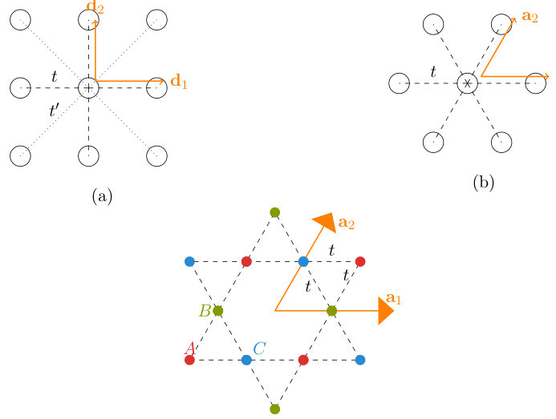
<figcaption class="paper-figure-caption"><b>Fig 1.</b> FIG. 1. Lattice geometries considered in this work: (a) square, (b) triangular, and (c) kagome</figcaption>
</figure>
<figure class="paper-figure-card">
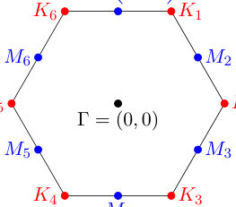
<figcaption class="paper-figure-caption"><b>Fig 2.</b> FIG. 2. Electronic band structures of the triangular (dashed line) and kagome (solid lines) lattices</figcaption>
</figure>
<figure class="paper-figure-card">
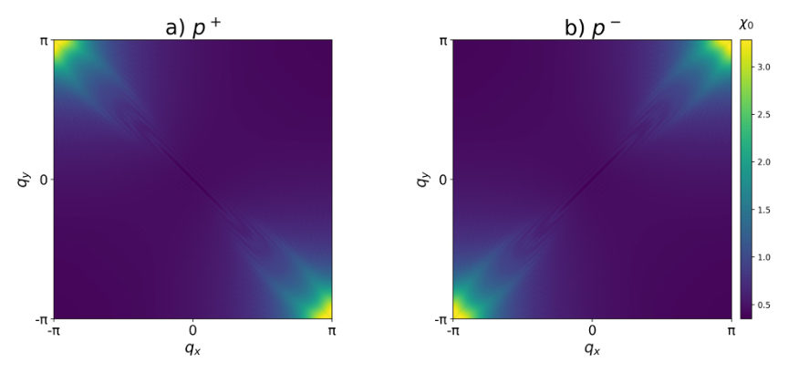
<figcaption class="paper-figure-caption"><b>Fig 3.</b> FIG. 4. Momentum-space bond-current susceptibilities of the square lattice at van Hove filling</figcaption>
</figure>
<figure class="paper-figure-card">
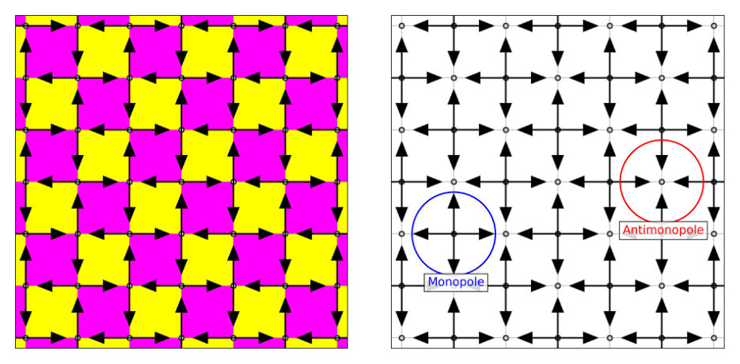
<figcaption class="paper-figure-caption"><b>Fig 4.</b> FIG. 5. Real-space bond-current configurations on the square lattice generated by the p+ and</figcaption>
</figure>
<figure class="paper-figure-card">
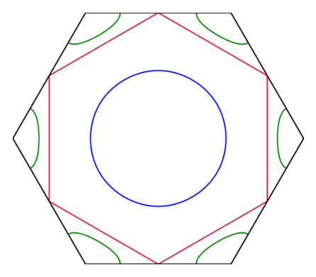
<figcaption class="paper-figure-caption"><b>Fig 5.</b> FIG. 6. Fermi surfaces of the triangular lattice at three representative fillings. The red curve</figcaption>
</figure>
</div>

<p><strong>Summary.</strong> This work develops a general theoretical framework connecting bond-current susceptibility anisotropy to the resulting current topology in correlated electron materials. By analyzing three different lattices, the authors show that fluctuations near specific filling levels favor distinct real-space current patterns, such as closed loop currents or source–sink textures. This provides a powerful tool for interpreting experimental signatures of charge order and broken symmetries.</p>
<p><strong>Why it may be interesting.</strong> While focused on condensed matter charge order, the rigorous mathematical framework linking momentum-space susceptibilities to real-space topological currents is highly relevant to understanding emergent collective excitations in quantum many-body systems.</p>
<details>
<summary>Detailed structure</summary>
<p><strong>Main problem.</strong> To establish a direct link between bond-current form factors, susceptibility anisotropy, and the resulting real-space current topology in correlated electron systems.</p>
<p><strong>Main result.</strong> The anisotropy of the bond-current susceptibility systematically favors ordering wave vectors that support closed loop-current states, providing a general framework for identifying such orders.</p>
<p><strong>Method.</strong> Derivation of symmetry-allowed bond-current form factors and calculation of the Random-Phase-Approximation (RPA) susceptibility on various lattices.</p>
<p><strong>Model / system.</strong> Correlated electron systems modeled using nearest-neighbor bond-charge interactions, studied on square, triangular, and kagome lattices.</p>
<p><strong>Key observables.</strong> Bond-current form factors ($\gamma_k$), susceptibility anisotropy $\chi(Q)$, and real-space current topology (e.g., closed loop currents vs. source–sink textures).</p>
<p><strong>Important parameters / regimes.</strong> Filling level ($\mu/t$), lattice geometry (square, triangular, kagome), and temperature ($T$).</p>
<p><strong>Assumptions / limitations.</strong> The physical current is identified with the imaginary part of the reconstructed order parameter; analysis often focuses on the sine-form-factor representation despite acknowledging limitations.</p>
<p><strong>Figures summary.</strong> Figures illustrate lattice structures (triangular/kagome) and show momentum-space bond-current susceptibilities for the square lattice, alongside real-space current configurations demonstrating both closed loops and source–sink patterns.</p>
<p><strong>Paper structure.</strong> The paper systematically derives form factors for different lattices, calculates susceptibility maxima to predict ordering vectors, and then reconstructs the corresponding real-space current topology based on these fluctuations.</p>
</details>
<details>
<summary>Abstract</summary>
<p>We derive all symmetry-allowed bond-current form factors generated by nearest-neighbor bond-charge interactions on square, triangular, and kagome lattices. We find that the anisotropy of the bond-current susceptibility systematically favors ordering wave vectors that support closed loop-current states, whereas symmetry-related wave vectors with weaker susceptibility generate noncirculating current textures. Near van Hove filling, this correspondence is robust across all lattice geometries considered, producing staggered flux phases on the square lattice, diamond-shaped current patterns on the triangular lattice and both chiral and nonchiral loop-current states on the kagome lattice. Our results establish a direct link between bond-current form factors, susceptibility anisotropy, and real-space current topology, providing a general framework for identifying loop-current orders and interpreting signatures of time-reversal symmetry breaking in correlated electron materials.</p>
</details>
<p><sub><a href="#top">↑ back to top</a></sub></p>

<p><a id="paper-2607.25767"></a></p>
<h3 id="critical-ripples-and-dirac-fermions-in-crystalline-membranes"><a href="http://arxiv.org/abs/2607.25767v1">Critical Ripples and Dirac Fermions in Crystalline Membranes</a></h3>
<p><strong>Authors:</strong> Sebastián Bahamondes, Rodrigo Soto-Garrido, Enrique Muñoz, Vladimir Juričić<br>
<strong>Type:</strong> theory · <strong>Category:</strong> statistical mechanics · <strong>PDF:</strong> <a href="https://arxiv.org/pdf/2607.25767v1">https://arxiv.org/pdf/2607.25767v1</a><br>
<strong>Analysis basis:</strong> full PDF text, analyzed in chunks
<strong>Topic relevance:</strong> <code>non-equilibrium universality</code> <strong>3/5</strong> · <code>driven-dissipative phase transition</code> <strong>2/5</strong> · <code>non-equilibrium dynamics</code> <strong>2/5</strong> · <code>Frenkel-Kontorova</code> <strong>1/5</strong> · <code>Keldysh / 2PI / non-Gaussian methods</code> <strong>1/5</strong> · <code>Kondo &amp; dissipative impurity</code> <strong>1/5</strong> · <code>analog quantum simulation</code> <strong>1/5</strong> · <code>methods for driven-dissipative</code> <strong>1/5</strong></p>
<div class="figure-strip-hint">↔ Scroll figures horizontally</div>
<div class="paper-figures-scroll">
<figure class="paper-figure-card">
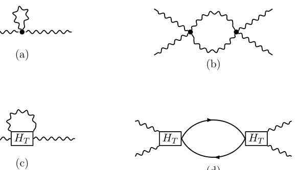
<figcaption class="paper-figure-caption"><b>Fig 1.</b> Figure 1. Flat-phase one-loop Feynman diagrams. Wiggly lines denote flexural propagators and solid directed lines denote Dirac propagators. Panels (a) and (b) generate the pure-membrane renormalizations in eqs. (3.1)–(3.3). Panel (c) is the isotropic-tension insertion entering eqs. (3.6) and (3.16); its Ward-identity derivation is given in appendices B and D. Panel (d) generates the nonlocal strain interaction in eq. (3.28), with the polarization given in eq. (3.26).</figcaption>
</figure>
<figure class="paper-figure-card">
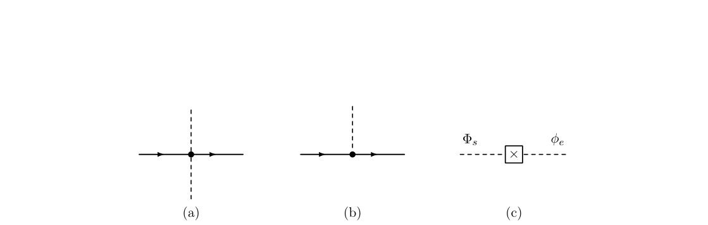
<figcaption class="paper-figure-caption"><b>Fig 2.</b> Figure 2. Finite-momentum couplings. Solid directed lines denote Dirac propagators and dashed lines denote bosonic fields. Each arrow is centered on its uninterrupted propagator segment; open fermion lines are oriented from left to right. Panel (a) represents the mechanical density interaction in eq. (4.7). Panel (b) is the symmetry-locked Yukawa vertex in eq. (5.1). Panel (c) depicts the bilinear electronic–structural mixing in eq. (5.6), which induces the relation in eq. (5.7).</figcaption>
</figure>
<figure class="paper-figure-card">
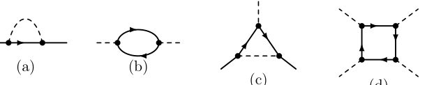
<figcaption class="paper-figure-caption"><b>Fig 3.</b> Figure 3. One-loop diagrams of the finite-Q GNY theory. Solid lines denote Dirac propagators and dashed lines denote bosonic order-parameter propagators. Arrows are centered on the internal fermion segments between vertices; open fermion lines are oriented from left to right, while arrows on closed loops follow a consistent circulation. Panels (a) and (b) determine the anomalous dimensions in eqs. (5.16) and (5.17); panels (c) and (d) contribute to the beta functions in eqs. (5.10) and (5.11). The pole parts and normalization conventions are collected in appendix F.</figcaption>
</figure>
</div>

<p><strong>Summary.</strong> This theoretical work develops a field theory for crystalline membranes coupling flexural phonons with Dirac fermions. Using Renormalization Group techniques, the authors determine that while the system can remain stable in the flat limit, instabilities at finite wavelengths lead to distinct critical points. The most complex case involves a hybrid transition characterized by the chiral-XY Gross-Neveu-Yukawa universality class.</p>
<p><strong>Why it may be interesting.</strong> The rigorous application of critical phenomena concepts (RG theory) to coupled electronic/structural degrees of freedom is highly relevant for understanding quantum phase transitions in low-dimensional materials that bridge solid-state physics and statistical mechanics.</p>
<details>
<summary>Detailed structure</summary>
<p><strong>Main problem.</strong> The paper analyzes the low-energy field theory describing the coupled dynamics between nonrelativistic flexural phonons and relativistic Dirac quasiparticles in crystalline membranes.</p>
<p><strong>Main result.</strong> It distinguishes two critical scenarios: a stable flat phase, or genuine hybrid electronic-structural critical points governed by the chiral-XY Gross-Neveu-Yukawa universality class when symmetry permits coupling.</p>
<p><strong>Method.</strong> The analysis relies heavily on Renormalization Group (RG) flow techniques and one-loop calculations to determine the stability of different physical regimes and characterize critical exponents.</p>
<p><strong>Model / system.</strong> The system is a crystalline membrane hosting Dirac fermions, modeled by coupled effective actions for flexural phonons and massless Dirac quasiparticles. The coupling strength and renormalization are key focus areas.</p>
<p><strong>Key observables.</strong> Critical exponents (e.g., related to Wilson-Fisher or chiral-XY classes), renormalized elastic constants, and the flow of dimensionless coupling strengths ($ar{g}, y$).</p>
<p><strong>Important parameters / regimes.</strong> The ratio between flexural and Dirac energy scales ($s(\ell)$), charge neutrality conditions, and symmetry constraints (e.g., horizontal reflection parity).</p>
<p><strong>Assumptions / limitations.</strong> The analysis separates the infrared behavior (flat phase) from potential instabilities at finite momentum ($\pm Q$), and assumes specific symmetries dictate which universality class applies.</p>
<p><strong>Figures summary.</strong> Not specified in the notes, but the structure implies showing RG flow diagrams or critical exponents for different coupling regimes.</p>
<p><strong>Paper structure.</strong> The paper develops the coupled low-energy field theory, analyzes the stability of the long-wavelength flat phase via RG flow, and then examines two distinct instability scenarios: one governed by bosonic Wilson-Fisher fixed points, and a second, hybrid case leading to chiral-XY GNY universality.</p>
</details>
<details>
<summary>Abstract</summary>
<p>Crystalline membranes hosting Dirac fermions, with graphene as the paradigmatic example, combine two low-energy sectors with sharply different dynamics: nonrelativistic flexural phonons and relativistic-like Dirac quasiparticles. We develop the low-energy field theory of this coupled system at charge neutrality and determine how this dynamical mismatch controls the coupling between the two sectors. In the long-wavelength flat phase, rotational symmetry ties the renormalization of the leading local scalar strain--density coupling to the scale-dependent bending rigidity, causing its dimensionless strength to decrease logarithmically. At the same time, flexural modes become parametrically slower than the Dirac fermions, so the resulting fermionic feedback vanishes as a power law.The flat phase is therefore stable against this perturbation. The physics changes when elastic interactions or electronic softening destabilize the membrane at a finite wavelength, selecting a ripple pattern formed by modes at $\pm\mathbf{Q}$. For an isolated pair of ordering wavevectors, provided that commensurability-induced phase pinning is irrelevant, the transition is governed by the bosonic Wilson--Fisher fixed point, while the Dirac fermions remain spectators. A genuinely hybrid electronic--structural critical point arises instead when symmetry permits a mass-type Dirac bilinear to share the ripple's momentum and quantum numbers, including horizontal-reflection parity. The transition is then described by the chiral-XY Gross--Neveu--Yukawa universality class. Using the known one-loop critical exponents, we characterize this transition, determine the induced secondary elastic distortion, and show that the fermionic and bosonic velocities lock in the isotropic continuum limit.</p>
</details>
<p><sub><a href="#top">↑ back to top</a></sub></p>

<p><a id="paper-2607.25374"></a></p>
<h3 id="logarithmic-aging-diffusion-from-a-multiplicative-event-clock-rare-event-statistics-ultraslow-transport-and-ensemble-time-inequivalence"><a href="http://arxiv.org/abs/2607.25374v1">Logarithmic Aging Diffusion from a Multiplicative Event Clock: Rare Event Statistics, Ultraslow Transport, and Ensemble-Time Inequivalence</a></h3>
<p><strong>Authors:</strong> Chunyan Li, Zheng Li, Yueyan Li, Haiwen Liu, X. C. Xie<br>
<strong>Type:</strong> theory · <strong>Category:</strong> disordered systems and neural networks · <strong>PDF:</strong> <a href="https://arxiv.org/pdf/2607.25374v1">https://arxiv.org/pdf/2607.25374v1</a><br>
<strong>Analysis basis:</strong> full PDF text, analyzed in chunks
<strong>Topic relevance:</strong> <code>non-equilibrium dynamics</code> <strong>3/5</strong> · <code>non-equilibrium universality</code> <strong>2/5</strong> · <code>scars &amp; prethermalization</code> <strong>2/5</strong> · <code>Keldysh / 2PI / non-Gaussian methods</code> <strong>1/5</strong> · <code>analog quantum simulation</code> <strong>1/5</strong> · <code>correlated / nonlocal dissipation</code> <strong>1/5</strong> · <code>driven-dissipative phase transition</code> <strong>1/5</strong> · <code>methods for driven-dissipative</code> <strong>1/5</strong></p>
<div class="figure-strip-hint">↔ Scroll figures horizontally</div>
<div class="paper-figures-scroll">
<figure class="paper-figure-card">
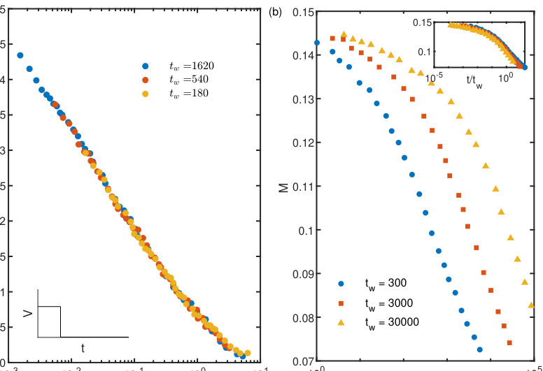
<figcaption class="paper-figure-caption"><b>Fig 1.</b> Figure 1. One-time logarithmic relaxation and protocol-dependent aging are distinct experimental signa- tures. (a) Conductance relaxation in an electron glass: the conductance G of thin In2O3−x films relaxes logarithmically after a sudden change in external stress, shown in the inset. Data are reproduced from Fig. 2 of Ref. [39]. (b) Normalized thermoremanent magnetization M in an Ag : Mn 2.6% spin glass, showing slow relaxation and aging. After field cooling and a waiting time tw, the magnetic field was switched off at t = 0 and the decay of M was recorded. Data are reproduced from Fig. 1 of arXiv: cond-mat/9607224. Inset: scaling collapse as a function of t/tw.</figcaption>
</figure>
<figure class="paper-figure-card">
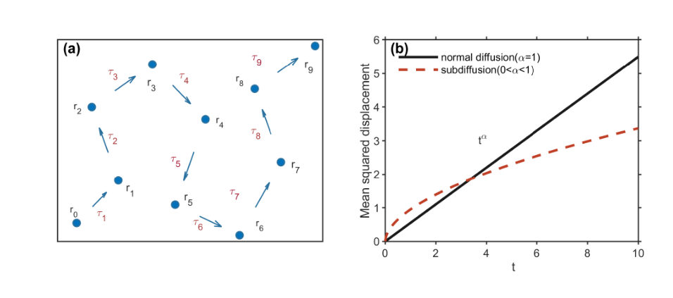
<figcaption class="paper-figure-caption"><b>Fig 2.</b> Figure 2. Standard decoupled CTRW: additive renewal times and power-law subdiffusion. (a) Random- walk dynamics in a heterogeneous energy landscape. The particle alternates between mobile episodes and trapping periods induced by defects, traps, or energy barriers. Escape from a trap occurs after a stochastic waiting time, after which the particle makes a transition to another state. (b) The distribution of waiting times determines the long-time transport behavior. When the distribution has a finite characteristic time, the transition rate is effectively constant at long times and the dynamics reduces to normal diffusion, with ⟨x2(t)⟩∝t. When the distribution is broad and scale-free, no...</figcaption>
</figure>
<figure class="paper-figure-card">
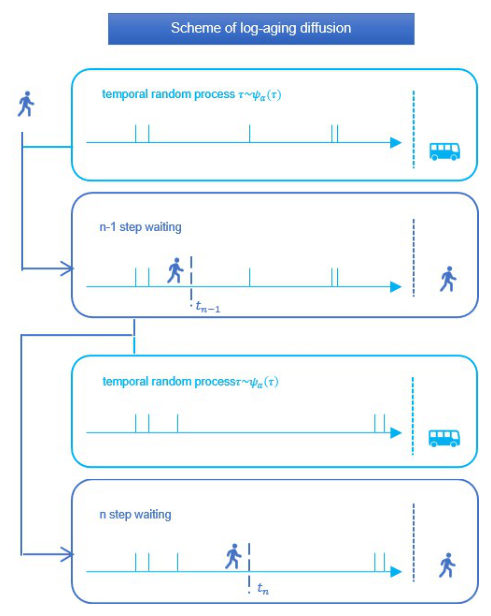
<figcaption class="paper-figure-caption"><b>Fig 3.</b> Figure 3. Forward-waiting-time construction and its iteration in the log-aging model. The bus analogy represents an underlying heavy-tailed renewal stream with ψα(τ) ∼Aτ −1−α. At an arbitrary observation age, an ordinary aged renewal process uses the residual or forward waiting time only until the next renewal. The log-aging construction makes an additional modeling step: at each event time Tn, it samples the next residual interval from the age-conditioned law and thereby generates a multiplier Yn = Tn+1/Tn. In the scaling limit these multipliers are i.i.d. with density gα(y), making the process additive in logarithmic time.</figcaption>
</figure>
<figure class="paper-figure-card">
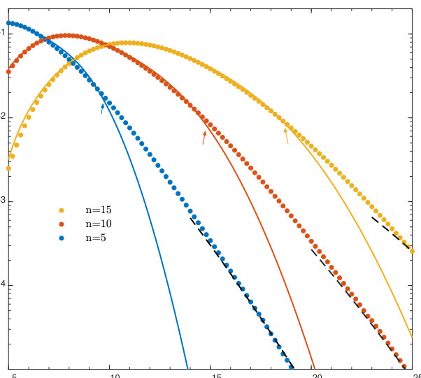
<figcaption class="paper-figure-caption"><b>Fig 4.</b> Figure 4. Central and far-tail regimes of the exact-count probability hn(t) = Pr[N(t) = n]. Symbols show numerical results for n = 5, 10, and 15. The colored solid curves are the central large-n approximation, which is Gaussian in ln(t/t0). The black dashed lines are the fixed-n, long-time asymptote hn(t) ∝t−α[ln(t/t0)]n. The two fits therefore represent different orders of limits: typical clock fluctuations near the peak and rare low-activity histories in the far-time tail.</figcaption>
</figure>
<figure class="paper-figure-card">
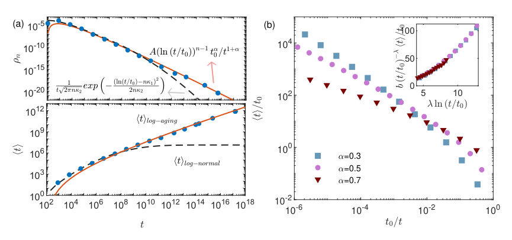
<figcaption class="paper-figure-caption"><b>Fig 5.</b> Figure 5. Central and far-tail sectors of the nth-event-time density ρn(t). (a) The central large-n sector is asymptotically log-normal in physical time, whereas the fixed-n far tail is t−1−α[ln(t/t0)]n−1. The truncated first duration moment, ⟨t⟩tr(tc) = ´ tc t0 t′ρn(t′) dt′, exposes the tail because duration weighting amplifies rare, long-lived histories. (b) Scaling of the truncated duration moment for several α. The figure diagnoses a duration-weighted rare-event sector; it should not be interpreted as evidence that the same tail dominates ordinary event-count moments or every low-frequency response in an arbitrary microscopic Griffiths system.</figcaption>
</figure>
</div>

<p><strong>Summary.</strong> This paper develops a detailed stochastic model based on a multiplicative event clock to explain logarithmic aging diffusion observed in various disordered materials. By analyzing the joint consistency of multiple observables—not just one scaling curve—the authors propose a mechanism that rigorously separates this specific type of slow dynamics from simpler theoretical approximations.</p>
<p><strong>Why it may be interesting.</strong> It provides a rigorous mathematical framework to distinguish between different physical origins of slow dynamics in disordered systems, which is crucial for interpreting experimental measurements in glassy materials or amorphous solids.</p>
<details>
<summary>Detailed structure</summary>
<p><strong>Main problem.</strong> The paper addresses the challenge of uniquely identifying the underlying stochastic mechanism responsible for logarithmic aging diffusion, as simple relaxation laws are insufficient.</p>
<p><strong>Main result.</strong> A specific multiplicative event clock model is proposed that generates unique signatures—such as distinct scaling behaviors in mean-square displacement and non-converging ensemble averages—that distinguish it from other slow dynamics models.</p>
<p><strong>Method.</strong> The authors analyze the process using an exact event-level construction based on iterating age-conditioned forward-recurrence laws, comparing this to diffusion-limit representations like Fokker-Planck equations.</p>
<p><strong>Model / system.</strong> The model is a 'Multiplicative Event Clock' governing logarithmic aging diffusion. It applies conceptually to physical systems exhibiting slow dynamics, such as electron glasses or disordered magnetic materials.</p>
<p><strong>Key observables.</strong> Logarithmic drift and spreading, Einstein relation under local detailed balance, ultraslow transit/target-survival laws, relative scatter of mean-square displacement ($\propto 1/\ln(T/t_0)$).</p>
<p><strong>Important parameters / regimes.</strong> The ratio of event times ($U_n = \ln(T_{n+1}/T_n)$) being i.i.d., and the time scale separation between trajectory reproducibility and ensemble averages.</p>
<p><strong>Assumptions / limitations.</strong> The analysis distinguishes the exact event-level construction from its diffusion limit, acknowledging that generalized Langevin closures might match some responses but fail to reproduce core event statistics.</p>
<p><strong>Figures summary.</strong> Figure 1 illustrates the difference between one-time logarithmic relaxation (e.g., conductance) and protocol-dependent aging (e.g., TRM).</p>
<p><strong>Paper structure.</strong> The paper establishes the inadequacy of simple scaling laws, introduces the multiplicative event clock via its recurrence law, derives resulting statistics for count/variance, compares this exact construction against continuum limits (Fokker-Planck), and concludes by demanding joint consistency across multiple observable types.</p>
</details>
<details>
<summary>Abstract</summary>
<p>Logarithmic time dependences occur in many aging materials, but neither a $\ln t$ relaxation law nor a $1/t$ event rate uniquely identifies the underlying stochastic mechanism. We examine a specific log-aging process defined by iterating the age-conditioned forward-recurrence law after every event. This rule makes the event times multiplicative: the logarithmic ratios $U_n=\ln(T_{n+1}/T_n)$ are independent and identically distributed with an explicit non-exponential density. Consequently, both the mean and the variance of the event count grow linearly with $\ln(t/t_0)$, while the density of the $n$th event time has a log-normal central sector and a fixed-$n$ algebraic far tail. These clock statistics generate logarithmic drift and spreading, an Einstein relation under local detailed balance, and ultraslow transit and target-survival laws. They also separate trajectory reproducibility from ensemble--time equivalence: the relative scatter of the time-averaged mean-square displacement decays as $1/\ln(T/t_0)$, although its mean does not converge to the ensemble lag MSD. We distinguish the exact event-level construction from its diffusion-limit generalized Fokker--Planck and random-clock subordination representations, and from a generalized-Langevin closure that can match selected responses and covariances but need not reproduce event counts or rare-duration statistics. The proposed clock is therefore tested not by a single logarithmic curve, but by the joint, no-refitting consistency of multiplier, count, transport, first-passage, and finite-window observables.</p>
</details>
<p><sub><a href="#top">↑ back to top</a></sub></p>

<p><a id="paper-2607.25697"></a></p>
<h3 id="gravity-controlled-non-equilibrium-casimir-pressure-in-a-binary-liquid-mixture"><a href="http://arxiv.org/abs/2607.25697v1">Gravity-controlled non-equilibrium Casimir pressure in a binary liquid mixture</a></h3>
<p><strong>Authors:</strong> Marcin Piotr Pruszczyk, Roberto Cerbino, Andrea Gambassi<br>
<strong>Type:</strong> both · <strong>Category:</strong> statistical mechanics · <strong>PDF:</strong> <a href="https://arxiv.org/pdf/2607.25697v1">https://arxiv.org/pdf/2607.25697v1</a><br>
<strong>Analysis basis:</strong> full PDF text, analyzed in chunks
<strong>Topic relevance:</strong> <code>non-equilibrium dynamics</code> <strong>3/5</strong> · <code>non-equilibrium universality</code> <strong>3/5</strong> · <code>Keldysh / 2PI / non-Gaussian methods</code> <strong>1/5</strong> · <code>analog quantum simulation</code> <strong>1/5</strong> · <code>correlated / nonlocal dissipation</code> <strong>1/5</strong> · <code>driven-dissipative phase transition</code> <strong>1/5</strong> · <code>methods for driven-dissipative</code> <strong>1/5</strong></p>
<div class="figure-strip-hint">↔ Scroll figures horizontally</div>
<div class="paper-figures-scroll">
<figure class="paper-figure-card">
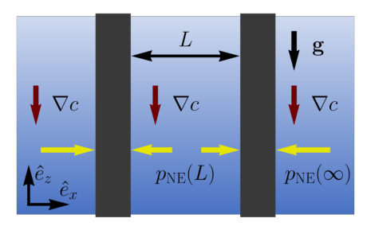
<figcaption class="paper-figure-caption"><b>Fig 1.</b> FIG. 1. Cartoon of the physical setup considered in this work. The gradient ˆez∇c (with ∇c &lt; 0) of the concentration c of the denser solute in the less dense solvent, represented by the blue color gradient, is parallel to the gravitational acceleration −ˆezg and to two parallel plates separated by a distance L. The mixture in the presence of the gradient fills the space also outside the plates. The surface of the plate which is in contact with the liquid within the slab is subject to the non- equilibrium pressure pNE(L), while the other surface is subject to the pressure pNE(L →∞) (yellow arrows). Accordingly, the net pressure acting on each plate is pCas(L) = pNE(L) − pNE(L →∞).</figcaption>
</figure>
<figure class="paper-figure-card">
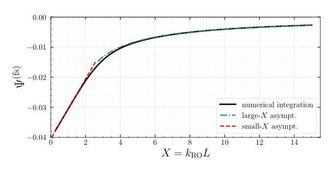
<figcaption class="paper-figure-caption"><b>Fig 2.</b> FIG. 2. Scaling function Ψ(fs)(X) of pCas given by Eqs. (17) and (20). The black solid line corresponds to Ψ(fs)(X) calculated numerically (starting from X ≃0.3), while its asymptotic behaviors given by Eq. (21) for X ≫1 and by Eq. (22) for X ≪1 are plotted with dashed green and red lines, respectively. The asymptotic expressions provide accurate approximation of the actual curve, except for 2 ≲X ≲4.</figcaption>
</figure>
</div>

<p><strong>Summary.</strong> This paper theoretically derives and analyzes the non-equilibrium Casimir pressure arising from concentration gradients and gravity in a binary liquid mixture. Using fluctuating hydrodynamics, it shows that this excess pressure decays algebraically with separation $L$ and can be either attractive or repulsive depending on the fluid properties. The work proposes both advanced mathematical techniques for calculation and concrete experimental setups for measurement.</p>
<p><strong>Why it may be interesting.</strong> While focused on classical fluid dynamics, the use of fluctuating hydrodynamics to calculate long-range correlations (Casimir forces) connects statistical mechanics principles to measurable macroscopic forces, which is relevant to understanding fluctuations in complex quantum or many-body systems.</p>
<details>
<summary>Detailed structure</summary>
<p><strong>Main problem.</strong> The study investigates the non-equilibrium Casimir pressure generated by thermal hydrodynamic fluctuations in a binary liquid mixture subjected to both an imposed concentration gradient and gravity.</p>
<p><strong>Main result.</strong> The excess Casimir pressure decays algebraically as $1/(k_{\mathrm{RO}}L)$ at large separations, and its sign (attractive or repulsive) depends on the thermodynamic properties of the mixture.</p>
<p><strong>Method.</strong> Fluctuating hydrodynamics equations are employed to calculate the excess pressure using fluctuation-dissipation relations and subsequent asymptotic analysis techniques like Poisson resummation and Mellin transforms.</p>
<p><strong>Model / system.</strong> The system is a three-dimensional slab containing an isothermal binary liquid mixture, modeled far from its consolute critical point. The non-equilibrium state is driven by a constant concentration gradient ($
abla c$) parallel to gravity ($g$).</p>
<p><strong>Key observables.</strong> Non-equilibrium Casimir pressure $p_{Cas}(L)$, the scaling function $\Psi(k_{\mathrm{RO}}L)$, and the force magnitude.</p>
<p><strong>Important parameters / regimes.</strong> The roll-off wavevector ($k_{\mathrm{RO}}$), the ratio of imposed to equilibrium gradients ($
abla c / 
abla c_{gr}$), and the slab thickness $L$.</p>
<p><strong>Assumptions / limitations.</strong> The system is assumed to be far from convective instability, and various approximations are made regarding the relative speeds of momentum versus mass diffusion.</p>
<p><strong>Figures summary.</strong> Figure 2 numerically illustrates the scaling function $\Psi_{fs}(X)$ for different asymptotic regimes ($X \gg 1$ and $X \ll 1$). Figure S1 shows experimental data relating scattered light intensity to the compressibility factor $Z(\phi)$.</p>
<p><strong>Paper structure.</strong> The paper develops the theory using fluctuating hydrodynamics, derives the scaling function $\Psi(X)$ for the Casimir pressure, analyzes its asymptotic behavior ($L^{-1}$ decay), and concludes with proposals for both theoretical analysis (Poisson resummation) and experimental measurement setups.</p>
</details>
<details>
<summary>Abstract</summary>
<p>We investigate the non-equilibrium Casimir pressure in an isothermal binary liquid mixture maintained in a spatially constant and stationary concentration gradient parallel to gravity and confined within a three-dimensional slab of thickness $L$, bounded by two infinite plates parallel to both the gravitational field and the imposed gradient. We assume that the liquid mixture, under the same non-equilibrium conditions, occupies both the interior and the exterior of the slab. Using fluctuating hydrodynamics, we show that the resulting finite-size excess pressure on the plates is described by a scaling function of the dimensionless variable $k_{\mathrm{RO}}L$, where $k_{\mathrm{RO}}$ is the gravity-induced roll-off wavevector. At large separations, this Casimir pressure decays as $1/(k_{\mathrm{RO}}L)$. Depending on the thermodynamic properties of the mixture, the corresponding force can be either attractive or repulsive, while it vanishes for ideal solutions. Since the mixture is assumed to be far from its consolute critical point, the Casimir pressure investigated here is entirely of non-equilibrium origin and it vanishes in the absence of the imposed concentration gradient. Finally, we propose an experimental setup where this force might be measured, consisting of two optically trapped colloidal particles immersed in a dense aqueous colloidal suspension diffusing into an overlying layer of pure water, estimating the expected magnitude of the resulting force.</p>
</details>
<p><sub><a href="#top">↑ back to top</a></sub></p>

<p><a id="paper-2607.24968"></a></p>
<h3 id="universal-optimization-and-tighter-fidelity-bounds-for-approximate-quantum-error-correction"><a href="http://arxiv.org/abs/2607.24968v1">Universal Optimization and Tighter Fidelity Bounds for Approximate Quantum Error Correction</a></h3>
<p><strong>Authors:</strong> Jing Wu, Michele Grossi, Doga Kurkcuoglu, Silvia Zorzetti<br>
<strong>Type:</strong> theory · <strong>Category:</strong> quantum information and computing · <strong>PDF:</strong> <a href="https://arxiv.org/pdf/2607.24968v1">https://arxiv.org/pdf/2607.24968v1</a><br>
<strong>Analysis basis:</strong> full PDF text, analyzed in chunks
<strong>Topic relevance:</strong> <code>entanglement &amp; information structure</code> <strong>3/5</strong> · <code>methods for driven-dissipative</code> <strong>3/5</strong> · <code>correlated / nonlocal dissipation</code> <strong>2/5</strong> · <code>Keldysh / 2PI / non-Gaussian methods</code> <strong>1/5</strong> · <code>QC/QI experiment</code> <strong>1/5</strong> · <code>driven-dissipative phase transition</code> <strong>1/5</strong></p>
<div class="figure-strip-hint">↔ Scroll figures horizontally</div>
<div class="paper-figures-scroll">
<figure class="paper-figure-card">
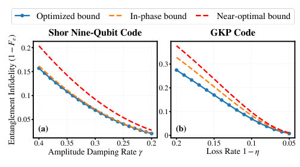
<figcaption class="paper-figure-caption"><b>Fig 1.</b> FIG. 1. Comparison of entanglement infidelity lower bounds. (a) Shor nine-qubit code under the amplitude damping chan- nel as a function of the damping rate γ. (b) GKP code with mean photon number ¯nGKP = 10 in a thermal loss channel. The GKP code performance is evaluated against the channel transmissivity η with a thermal background of ¯nth = 1.</figcaption>
</figure>
<figure class="paper-figure-card">
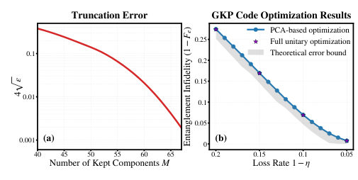
<figcaption class="paper-figure-caption"><b>Fig 2.</b> FIG. 2. PCA-based optimization of entanglement infidelity. (a) Truncation error 4√ϵ as a function of the number of prin- cipal components M (dE = 2415) for GKP code subject to a thermal loss channel with transmission η = 0.87 and ¯nth = 1. (b) Entanglement infidelity obtained via the PCA-based opti- mization compared with full unitary optimization, evaluated in thermal loss channel with ¯nth = 1.</figcaption>
</figure>
</div>

<p><strong>Summary.</strong> This paper introduces an efficient theoretical framework to calculate entanglement fidelity bounds for Approximate Quantum Error Correction. By exploiting a duality relationship and employing Principal Component Analysis, the authors overcome the exponential computational bottleneck associated with large quantum codes. This allows for high-precision analysis of error resilience in systems previously considered too complex to model accurately.</p>
<p><strong>Why it may be interesting.</strong> This work provides concrete algorithmic improvements for quantifying hardware limitations (decoherence) in complex quantum systems, directly impacting the feasibility of building fault-tolerant quantum computers.</p>
<details>
<summary>Detailed structure</summary>
<p><strong>Main problem.</strong> The primary challenge is developing computationally tractable methods for Approximate Quantum Error Correction (AQEC) because standard optimization techniques scale exponentially with system size.</p>
<p><strong>Main result.</strong> The authors establish an efficient framework using a dual representation and Principal Component Analysis (PCA) that yields a tighter analytical lower bound on entanglement fidelity, enabling high-precision optimization for previously intractable codes.</p>
<p><strong>Method.</strong> They leverage the duality between recovery maps and environment decoupling, reformulating the maximization problem to utilize PCA dimensionality reduction techniques.</p>
<p><strong>Model / system.</strong> The work applies to AQEC in both discrete-variable (DV) and continuous-variable (CV) quantum processors. Specific examples include analyzing GKP codes under thermal loss and Shor nine-qubit codes under amplitude damping.</p>
<p><strong>Key observables.</strong> Entanglement fidelity ($F_e$), In-phase lower bound ($F_{	ext{IP}}$), and the computational speedup achieved by the new framework.</p>
<p><strong>Important parameters / regimes.</strong> Noise parameters like thermal loss rates ($\eta$) and damping rates ($\gamma$); system size (number of qubits/modes) dictates complexity.</p>
<p><strong>Assumptions / limitations.</strong> The in-phase lower bound assumes a block-diagonal structure for certain density matrix components, and the PCA framework relies on spectral concentration to justify dimensionality reduction.</p>
<p><strong>Figures summary.</strong> Figures compare different entanglement infidelity lower bounds (e.g., In-phase vs. near-optimal) showing superior performance for the new method; other figures demonstrate the exponential suppression of truncation error as more principal components are kept.</p>
<p><strong>Paper structure.</strong> The paper builds from establishing the theoretical framework using duality and Uhlmann's theorem, deriving the tighter in-phase lower bound, and finally implementing a PCA-based computational scheme to apply this theory to large, realistic quantum codes like GKP and Shor codes.</p>
</details>
<details>
<summary>Abstract</summary>
<p>Approximate quantum error correction (AQEC) not only dictates the performance of discrete- and continuous-variable quantum error correction codes but also serves as a unifying framework across various physical disciplines. Identifying the optimal recovery channel to maximize the entanglement fidelity via standard semidefinite programming is computationally bottlenecked by the exponentially growing number of Kraus operators with system size, rendering large-scale optimization prohibitive. While analytical near-optimal maps exist, they typically work only when the Knill-Laflamme conditions are nearly satisfied. In this Letter, we establish an efficient framework by leveraging the duality between recovery and environment decoupling. This framework yields a tighter analytical lower bound on entanglement fidelity than the conventional limit set by the transpose channel. Furthermore, by exploiting the decayed weights of noise Kraus operators, we introduce a framework based on principal component analysis to reduce the dimension. In thermal loss channels where the weights decay exponentially, our approach achieves a 33-fold computational speedup while maintaining rigorous accuracy. Our approach enables high-precision optimization for AQEC codes that were previously intractable due to the curse of dimensionality.</p>
</details>
<p><sub><a href="#top">↑ back to top</a></sub></p>

<p><a id="paper-2607.25345"></a></p>
<h3 id="detecting-quantum-phase-transitions-via-shallow-variational-quantum-circuits"><a href="http://arxiv.org/abs/2607.25345v1">Detecting quantum phase transitions via shallow variational quantum circuits</a></h3>
<p><strong>Authors:</strong> Ching-Yu Huang, Min-Fong Yang<br>
<strong>Type:</strong> theory · <strong>Category:</strong> statistical mechanics · <strong>PDF:</strong> <a href="https://arxiv.org/pdf/2607.25345v1">https://arxiv.org/pdf/2607.25345v1</a><br>
<strong>Analysis basis:</strong> full PDF text, analyzed in chunks
<strong>Topic relevance:</strong> <code>analog quantum simulation</code> <strong>3/5</strong> · <code>exotic spin models in light-matter</code> <strong>3/5</strong> · <code>Keldysh / 2PI / non-Gaussian methods</code> <strong>1/5</strong> · <code>driven-dissipative phase transition</code> <strong>1/5</strong> · <code>entanglement &amp; information structure</code> <strong>1/5</strong> · <code>methods for driven-dissipative</code> <strong>1/5</strong></p>
<div class="figure-strip-hint">↔ Scroll figures horizontally</div>
<div class="paper-figures-scroll">
<figure class="paper-figure-card">
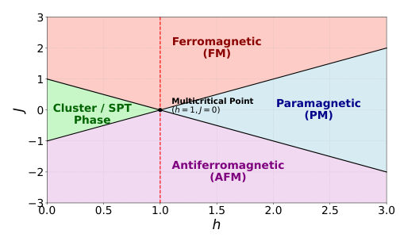
<figcaption class="paper-figure-caption"><b>Fig 1.</b> FIG. 1. Phase diagram of the model in Eq. (1). The black solid lines denote the phase boundaries of Ising transitions, hc = 1 ± J, which cross at the multicritical point (h, J) = (1, 0). The red dashed line indicates the self-dual line.</figcaption>
</figure>
<figure class="paper-figure-card">
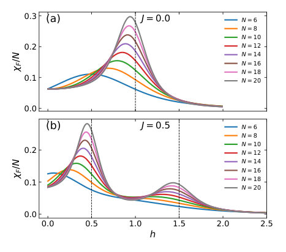
<figcaption class="paper-figure-caption"><b>Fig 2.</b> FIG. 2. Fidelity susceptibilities per site χF /N as functions of transverse field h for (a) J = 0 and (b) J = 0.5. The dashed lines denote the locations of quantum critical points hc = 1 ± J in the thermodynamical limit.</figcaption>
</figure>
<figure class="paper-figure-card">
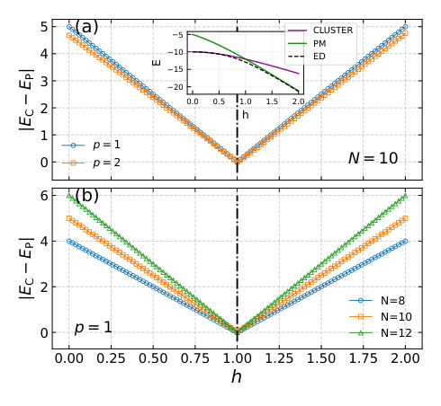
<figcaption class="paper-figure-caption"><b>Fig 3.</b> FIG. 3. Delta-VQE results for the Ising coupling J = 0, ob- tained with the variational ans¨atze |ψP(θ)⟩and |ψC(θ)⟩. The dashed lines denote the location of quantum critical points hc = 1 in the thermodynamical limit. (a) Absolute energy difference, ∆E(h) = |EC −EP|, as a function of the trans- verse field h for a system of N = 10 qubits with circuit depths p = 1, 2. The inset compares the variational energies of the cluster and PM ans¨atze for p = 1 with the exact ground-state energy evaluated by ED. (b) Size dependence of ∆E(h) for p = 1 with system sizes N = 8, 10, and 12. Although the magnitude of ∆E(h) increases with N away from the criti- cal point, all curves exhibit a common minimum...</figcaption>
</figure>
<figure class="paper-figure-card">

<figcaption class="paper-figure-caption"><b>Fig 4.</b> Fig. 2(a) shows the fidelity susceptibility per site, χF /N, for J = 0 across several system sizes N. As dis- cussed in Sec. II A, the cluster–PM transition occurs at hc = 1. As the system size increases, the peak becomes progressively sharper, and its position approaches the ex- act critical point hc = 1. Nevertheless, finite-size effects remain clearly visible for the system sizes accessible to ED. At J = 0.5, the Hamiltonian in Eq. (1) hosts two Ising critical points at hc = 1 ± J = 0.5 and 1.5. As shown in Fig. 2(b), two peaks emerge and progressively sharpen with increasing N with their peak positions converging toward the exact critical fields indicated by the dashed lines. This...</figcaption>
</figure>
<figure class="paper-figure-card">
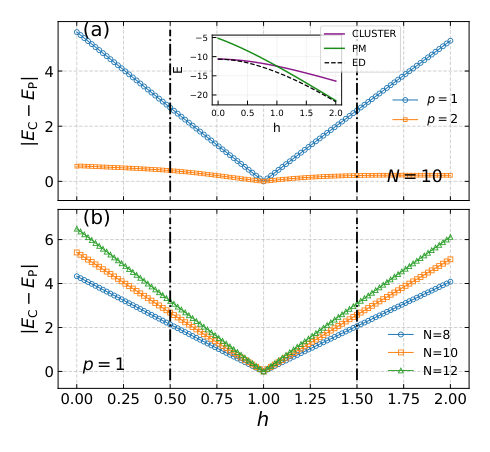
<figcaption class="paper-figure-caption"><b>Fig 5.</b> FIG. 4. Same as Fig. 3, but for the Ising coupling J = 0.5. The dashed lines denote the locations of quantum critical points hc = 1 ± J = 0.5 and 1.5 in the thermodynamical limit. The minimum of ∆E(h) remains located at h = 1 for circuit depths p = 1, 2 and across all system sizes under consideration.</figcaption>
</figure>
</div>

<p><strong>Summary.</strong> The paper introduces Delta-VQE, a variational quantum circuit technique designed to locate quantum phase transitions by measuring the energy difference between two distinct reference states. While resource-efficient, its accuracy hinges on selecting ansätze that physically represent the competing phases across the critical boundary, as general choices can lead to false positives at symmetry points.</p>
<p><strong>Why it may be interesting.</strong> This work provides a quantum algorithm approach to characterizing phase transitions in strongly correlated systems, which is highly relevant for understanding emergent phenomena in condensed matter physics.</p>
<details>
<summary>Detailed structure</summary>
<p><strong>Main problem.</strong> Detecting quantum phase transitions (QPTs) is computationally demanding using classical simulations, even for small systems.</p>
<p><strong>Main result.</strong> The proposed Delta-VQE method can resource-efficiently probe QPTs, but its success critically depends on designing physically representative variational ansätze that correctly capture the competing phases across the transition boundary.</p>
<p><strong>Method.</strong> Delta-VQE determines critical points by calculating and minimizing the absolute energy difference ($\Delta E$) between two variational quantum circuits optimized from reference states corresponding to distinct phases. This contrasts with standard methods like fidelity susceptibility.</p>
<p><strong>Model / system.</strong> The study focuses on the one-dimensional transverse-field Ising model with a three-spin cluster interaction, exhibiting various phases including Paramagnetic (PM), Symmetry-Protected Topological (SPT) cluster, Ferromagnetic (FM), and Antiferromagnetic (AFM).</p>
<p><strong>Key observables.</strong> The primary diagnostic is $\Delta E = |E_1 - E_2|$, the absolute difference in variational energies. Other observables include order parameters and fidelity susceptibility ($\chi_F$).</p>
<p><strong>Important parameters / regimes.</strong> Transverse field strength ($h$) and coupling constants ($J$), which define the phase diagram and critical points ($h_c$).</p>
<p><strong>Assumptions / limitations.</strong> The method assumes that the minimum of $\Delta E$ signals a quantum critical point. A major limitation is that using general dual ansätze can incorrectly identify self-dual points rather than true QCPs.</p>
<p><strong>Figures summary.</strong> Figures illustrate phase diagrams, showing Ising transition lines and self-dual lines. They compare $\Delta E(h)$ results against fidelity susceptibility ($\chi_F$), demonstrating that $\Delta$-VQE shows less finite-size dependence when correctly implemented.</p>
<p><strong>Paper structure.</strong> The paper introduces the resource challenge of QPT detection, details the Delta-VQE protocol using two variational ansätze for a cluster-Ising model, and then presents comparative results showing its efficacy versus fidelity susceptibility analysis under varying coupling strengths ($J$).</p>
</details>
<details>
<summary>Abstract</summary>
<p>Mapping quantum phase diagrams through classical simulation is notoriously resource-intensive, as even small systems far from the thermodynamic limit demand prohibitive computational effort. The variational quantum eigensolver (VQE) offers a compelling alternative, exploiting approximate ground states to distinguish phases. An appealing proposal, dubbed as Delta-VQE, determines critical points by contrasting variational energies optimized from reference states of distinct phases. Intriguingly, the diagnostic sharpens as circuit depth decreases, highlighting its promise as a resource-conscious probe of quantum criticality. To probe the broader applicability and underlying mechanisms of this approach, we investigate the one-dimensional transverse-field Ising model with a three-spin cluster interaction, a setting in which the Ising transitions are generally situated beyond the self-dual line. We demonstrate that, whenever dual ansätze are employed, Delta-VQE invariably detects the self-dual points rather than the true criticality. In contrast, when ansätze are carefully tailored to embody the competing phases across the boundary, the genuine Ising critical point can be successfully identified with only minor finite-size effects. Our results establish that, while Delta-VQE provides a resource-efficient probe of quantum criticality without requiring precise ground-state preparation, its diagnostic power is fundamentally contingent upon the judicious selection of physically representative ansätze.</p>
</details>
<p><sub><a href="#top">↑ back to top</a></sub></p>

<p><a id="paper-2607.24985"></a></p>
<h3 id="a-generalized-kirchhoffs-law-of-thermal-radiation-for-floquet-media"><a href="http://arxiv.org/abs/2607.24985v1">A generalized Kirchhoff's law of thermal radiation for Floquet media</a></h3>
<p><strong>Authors:</strong> Sander A. Mann, Dimitrios L. Sounas, Andrea Alù<br>
<strong>Type:</strong> theory · <strong>Category:</strong> statistical mechanics · <strong>PDF:</strong> <a href="https://arxiv.org/pdf/2607.24985v1">https://arxiv.org/pdf/2607.24985v1</a><br>
<strong>Analysis basis:</strong> full PDF text, analyzed in chunks
<strong>Topic relevance:</strong> <code>non-equilibrium dynamics</code> <strong>3/5</strong> · <code>non-equilibrium universality</code> <strong>2/5</strong> · <code>Keldysh / 2PI / non-Gaussian methods</code> <strong>1/5</strong> · <code>correlated / nonlocal dissipation</code> <strong>1/5</strong> · <code>driven-dissipative phase transition</code> <strong>1/5</strong> · <code>methods for driven-dissipative</code> <strong>1/5</strong></p>
<div class="figure-strip-hint">↔ Scroll figures horizontally</div>
<div class="paper-figures-scroll">
<figure class="paper-figure-card">
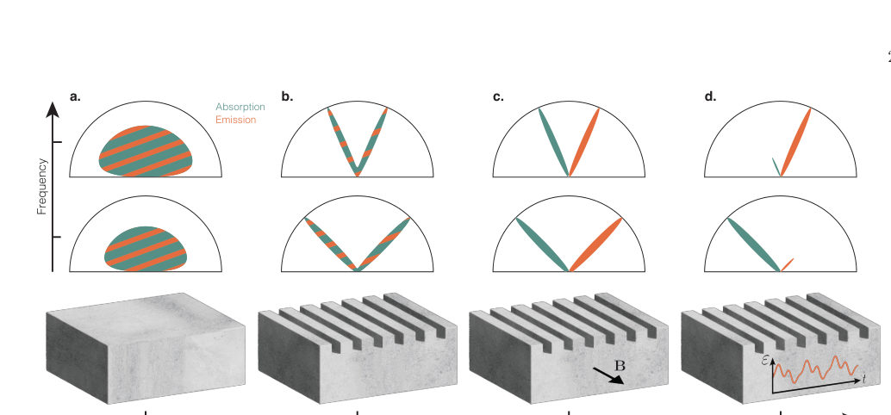
<figcaption class="paper-figure-caption"><b>Fig 1.</b> FIG. 1. Symmetry constraints on absorption and emission. Thermal emission from media with progressively relaxed symmetry constraints: for a planar half-space (a), the absorptivity and emissivity are simply dictated by its Fresnel reflection, yielding weak angular and frequency dependence as shown in the polar plots. For periodically structured materials (b), absorption and emission can be highly directional, with strong frequency dependence and tailored polarization states, but absorptivity and emissivity are necessarily equal for each direction and frequency. This property no longer holds for materials with a magnetic bias (c), which breaks reciprocity: now the emissivity and absorptivity...</figcaption>
</figure>
<figure class="paper-figure-card">
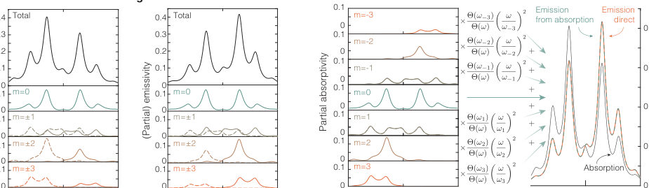
<figcaption class="paper-figure-caption"><b>Fig 2.</b> FIG. 2. Time-varying thermal emission from a modulated resonator. a. Absorption and emission in time-varying systems: light incident at ω is distributed across harmonics and absorbed, while fluctuations at multiple frequencies are emitted at frequency ω. b. Schematic of an absorbing resonator with time-modulated center frequency. c,d. Absorptivity (c) and emissivity (d) for a resonance with center frequency of 1 THz, modulated sinusoidally at 0.15 THz with increasing modulation depth on the horizontal axis. As the modulation depth increases, absorption and emission peaks at higher sidebands. e. Difference between emissivity and absorptivity versus modulation depth. For frequencies above the...</figcaption>
</figure>
<figure class="paper-figure-card">
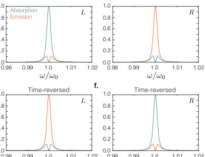
<figcaption class="paper-figure-caption"><b>Fig 3.</b> FIG. 3. A nonreciprocal thermal emitter through time-modulation. a. Schematic of a time-modulated ring of three resonators coupled to two ports, with one of them absorbing. b. Each resonance frequency is modulated at fre- quency Ω= 0.05ω0 but with a 2π/3 phase difference, inducing angular momentum bias. Under time-reversal the sign of the phases changes (bottom). c. In the left port, absorption peaks at ω0 but the emissivity dips, demonstrating a large difference between absorptivity and emissivity for the same frequency at the same port. d. In the right port, we observe the reverse behavior: emission peaks while absorption is ab- sent. This is consistent with the behavior of a...</figcaption>
</figure>
<figure class="paper-figure-card">
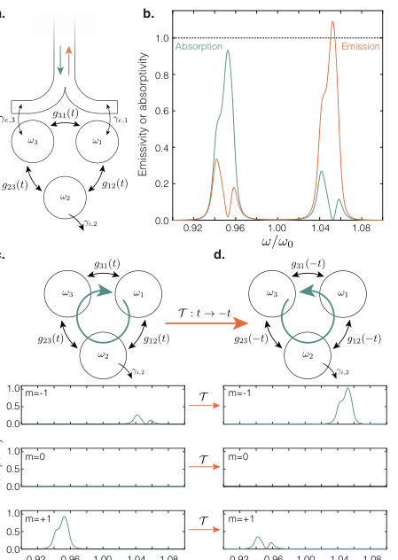
<figcaption class="paper-figure-caption"><b>Fig 4.</b> FIG. 4. Maximal violation of Kirchhoff’s law. a. Schematic of a loop of detuned resonators with couplings modulated in time at the difference frequencies between the connected resonances, thereby efficiently up- and down- converting around the loop with a handedness defined by the modulation phases. Two of the resonances (ω1 and ω3) are coupled to the same input port, while the third resonance ω2 absorbs. b. Absorptivity and emissivity at the port, demon- strating near-maximal violation of the standard Kirchhoff’s law: strong absorption without emission and vice-versa. c. The absorptivity of this structure can be understood via its harmonics: at the fundamental frequency absorption is ab-...</figcaption>
</figure>
<figure class="paper-figure-card">
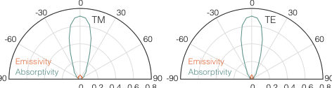
<figcaption class="paper-figure-caption"><b>Fig 5.</b> FIG. 5. Maximal violation of Kirchhoff’s law in a full- wave structure. a. A time-modulated layer is positioned on top of a narrowband absorber, formed by an absorbing layer in a distributed Bragg cavity absorbing at ωa. The top layer is modulated with a sawtooth profile with period 2π/T = ωa/20. b. The absorptivity and emissivity at nor- mal incidence, demonstrating strong violation of the time- invariant Kirchhoff’s law. c,d. The angle dependence of the absorptivity and emissivity at ω = 0.95ωa for the TM (c) and TE (d) polarization, showing that the violation persists for all angles and both polarizations.</figcaption>
</figure>
</div>

<p><strong>Summary.</strong> The paper generalizes Kirchhoff's law of thermal radiation to time-varying (Floquet) media where standard frequency relations fail. It derives a new relationship showing that emissivity is determined by a weighted sum of harmonic-resolved absorptivities. This has practical implications for designing advanced, non-equilibrium thermal emitters.</p>
<p><strong>Why it may be interesting.</strong> This work extends fundamental electromagnetic theorems into the realm of non-equilibrium quantum optics, providing a powerful tool for designing novel thermal emitters whose behavior cannot be predicted by static laws.</p>
<details>
<summary>Detailed structure</summary>
<p><strong>Main problem.</strong> The standard Kirchhoff's law relating thermal emission ($\epsilon$) to absorption ($\alpha$) breaks down in time-varying (Floquet) media because temporal modulation violates time-translation invariance.</p>
<p><strong>Main result.</strong> A generalized Kirchhoff's law is derived, stating that emissivity equals a weighted sum of harmonic-resolved absorptivities of the adjoint system. This allows for calculating $\epsilon$ from $\alpha$ in these complex systems.</p>
<p><strong>Method.</strong> The derivation uses fluctuation-dissipation theorems and Green's function techniques adapted for periodically time-varying media (Floquet theory), analyzing partial contributions across frequency harmonics.</p>
<p><strong>Model / system.</strong> The study focuses on linear, time-varying Floquet media, including examples like modulated resonators and core-shell particle structures. The system is characterized by temporal modulation at a frequency $\Omega$.</p>
<p><strong>Key observables.</strong> Emissivity ($\epsilon$), Absorptivity ($\alpha$), Partial harmonic contributions ($\epsilon_m, \alpha_m$), and the thermal occupation factor $\Theta(\omega, T)$.</p>
<p><strong>Important parameters / regimes.</strong> Modulation frequency ($\Omega$), modulation strength (related to coupling rates), and temperature ($T$).</p>
<p><strong>Assumptions / limitations.</strong> The derivation assumes linear response theory and relies on extensions of the Fluctuation-Dissipation Theorem to periodically driven systems.</p>
<p><strong>Figures summary.</strong> Figures illustrate the breakdown of standard Kirchhoff constraints in time-varying media, showing how $\epsilon$ and $\alpha$ can be significantly different for nonreciprocal or modulated structures. They also detail harmonic decomposition.</p>
<p><strong>Paper structure.</strong> The paper establishes the theoretical necessity for a generalized law due to modulation, derives the relationship linking partial emissivities to adjoint absorptivities across harmonics, and then demonstrates this law's implications using specific physical models (e.g., nonreciprocal resonators).</p>
</details>
<details>
<summary>Abstract</summary>
<p>Kirchhoff's law fundamentally relates thermal emission to absorption. For linear, static, reciprocal media, it equates the emissivity and absorptivity for each direction and frequency, while in nonreciprocal systems emission and absorption are equal when the bias is time-reversed. In time-varying media, however, temporal modulation breaks time-translation invariance, converts frequencies, and enables energy exchange with the modulation drive. As a result, a same-frequency relation between absorptivity and emissivity can no longer be expected. Here, we derive a generalized Kirchhoff's law for linear time-varying Floquet media. We show that the emissivity at a given frequency equals a weighted sum of harmonic-resolved absorptivities of the adjoint system, with weights accounting for thermal occupation and photon-flux conversion. This relation has both practical and fundamental consequences. In practical terms, it allows emissivity to be calculated from absorption, simplifying the design of time-varying thermal emitters. More fundamentally, it reveals thermal radiation regimes inaccessible in static media. In particular, we identify time-varying structures that exhibit strong emission with negligible absorption at the same frequency for all directions, yielding a near-maximal violation of the conventional form of Kirchhoff's law.</p>
</details>
<p><sub><a href="#top">↑ back to top</a></sub></p>

<p><a id="paper-2607.25331"></a></p>
<h3 id="entanglement-based-quantum-key-distribution-with-data-in-hollow-core-fiber"><a href="http://arxiv.org/abs/2607.25331v1">Entanglement-based quantum key distribution with data in hollow-core fiber</a></h3>
<p><strong>Authors:</strong> Yue Luo, Sheng Liu, Yun-Ru Fan, Da-Wei Ge, Zhi-Yang Liu, Hao Li, Si Shen, Zi-Chang Zhang, Hai-Zhi Song, Li-Xing You, Tao Zhou, Kai Guo, Guang-Can Guo, Qiang Zhou<br>
<strong>Type:</strong> both · <strong>Category:</strong> quantum information and computing · <strong>PDF:</strong> <a href="https://arxiv.org/pdf/2607.25331v1">https://arxiv.org/pdf/2607.25331v1</a><br>
<strong>Analysis basis:</strong> full PDF text, analyzed in chunks
<strong>Topic relevance:</strong> <code>quantum optics experiment</code> <strong>3/5</strong> · <code>QC/QI experiment</code> <strong>2/5</strong> · <code>correlated / nonlocal dissipation</code> <strong>1/5</strong> · <code>entanglement &amp; information structure</code> <strong>1/5</strong> · <code>interference shaping light</code> <strong>1/5</strong> · <code>non-equilibrium dynamics</code> <strong>1/5</strong></p>
<div class="figure-strip-hint">↔ Scroll figures horizontally</div>
<div class="paper-figures-scroll">
<figure class="paper-figure-card">
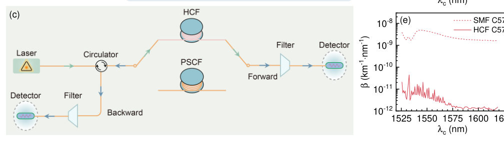
<figcaption class="paper-figure-caption"><b>Fig 1.</b> FIG. 1. Performance comparison between SMF and HCF for quantum-classical coexistence. (a) SEM image of HCF in this work. (b) Conceptual illustration of quantum-classical coexistence performance in SMF and HCF transmission systems. (c) Schematic of the Raman scattering measurement principle. (d) Measured Raman scattering coefficients of SMF (dashed) and HCF (solid) in ITU channels C35 (blue) and (e) C57 (red) with different λc.</figcaption>
</figure>
<figure class="paper-figure-card">
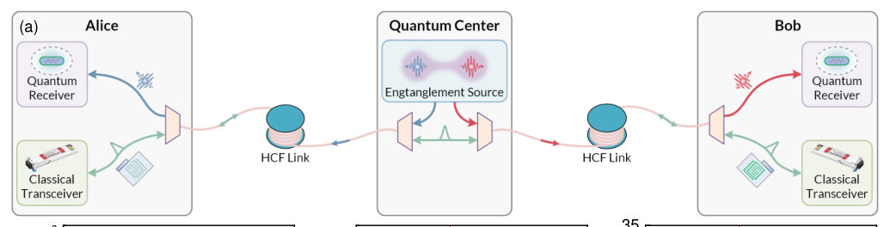
<figcaption class="paper-figure-caption"><b>Fig 2.</b> FIG. 2. Characterization of HCF-based coexistence system. (a) Schematic of system noise measurement. (b) Single-side count rates of noise photons in ITU channels C35 (blue) and C57 (red) with different λc. (c) Accidental coincidence count rate and (d) CAR of noise photons between ITU channels C35 and C57 with different λc.</figcaption>
</figure>
<figure class="paper-figure-card">
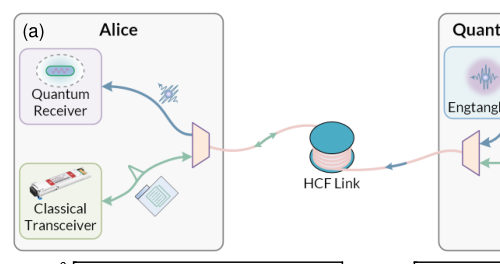
<figcaption class="paper-figure-caption"><b>Fig 3.</b> Figure 3(e) presents the measured QBERs and SKRs under different pump powers. As the pump power in- creases, the SKR first rises due to the enhanced pair</figcaption>
</figure>
<figure class="paper-figure-card">
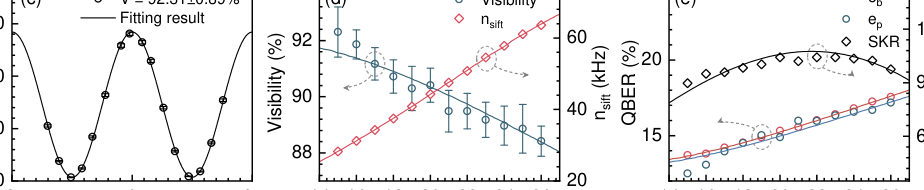
<figcaption class="paper-figure-caption"><b>Fig 4.</b> FIG. 3. Experimental demonstration of HD-QKD under quantum-classical coexistence conditions. (a) Conceptual illustration of the protocol, where red and blue balls denote entangled and noise photons, respectively. (b) Schematic of the HD-QKD system. (c) Franson interference curve at a pump power of 15 mW. (d) Visibilities and sifted key rates under different pump powers. (e) QBERs and SKRs under different pump powers.</figcaption>
</figure>
<figure class="paper-figure-card">

<figcaption class="paper-figure-caption"><b>Fig 5.</b> FIG. 4. Long-term stability test of the HD-QKD system over 24 hours under quantum-classical coexistence conditions. (a) Visibility. (b) ep. (c) eb. (d) SKR.</figcaption>
</figure>
</div>

<p><strong>Summary.</strong> The paper demonstrates that Hollow-Core Fibers (HCFs) are superior to traditional silica fibers for coexisting quantum key distribution and classical data transmission due to their ultra-low nonlinearity. Through experiments over 18 km, they achieved a stable secret key rate while maintaining high theoretical capacity estimates. This work validates HCFs as a scalable platform for future quantum internet infrastructure.</p>
<p><strong>Why it may be interesting.</strong> This work is highly relevant to quantum optics and open quantum systems because it addresses the critical engineering challenge of integrating fragile quantum signals with high-power classical channels in a practical fiber infrastructure, which requires detailed noise characterization.</p>
<details>
<summary>Detailed structure</summary>
<p><strong>Main problem.</strong> The primary challenge is enabling quantum key distribution (QKD) and classical data transmission to coexist reliably within a single optical fiber for future quantum networks.</p>
<p><strong>Main result.</strong> The study successfully demonstrated entanglement-based HD-QKD coexisting with data over an 18-km Hollow-Core Fiber (HCF) link, achieving an average Secret Key Rate of 10.56 kbps and predicting rates above 135 kbps over 200 km using state-of-the-art HCFs.</p>
<p><strong>Method.</strong> The authors employed time-encoded High-Dimensional Quantum Key Distribution (HD-QKD) protocols, characterizing noise sources like Raman scattering by comparing performance in HCF versus conventional Single-Mode Fiber (SMF).</p>
<p><strong>Model / system.</strong> The physical platform is the Hollow-Core Fiber (HCF), which guides light predominantly in air, offering intrinsically ultra-low nonlinearity compared to Pure Silica Core Fibers (PSCFs) that suffer from noise like Raman scattering and four-wave mixing.</p>
<p><strong>Key observables.</strong> Secret Key Rate (SKR), Coincidence-to-Accidental Ratio (CAR), Quantum Bit Error Rates (QBERs), and theoretical data capacity (up to 2.3 Tbps).</p>
<p><strong>Important parameters / regimes.</strong> 18-km link length, $0 	ext{ dBm}$ bidirectional received power, time-encoded dimension ($d=8$), and predicted SKR $> 135 	ext{ kbps}$ over $200+	ext{ km}$.</p>
<p><strong>Assumptions / limitations.</strong> The theoretical analysis relies on the availability of state-of-the-art low-loss HCFs to maintain high performance over long distances.</p>
<p><strong>Figures summary.</strong> Figures compare SMF and HCF performance, illustrate the experimental setup for simultaneous quantum/classical transmission, and show noise power spectral density and coincidence counts vs. classical channel wavelength.</p>
<p><strong>Paper structure.</strong> The paper progresses from identifying the coexistence problem in standard fibers to proposing HCFs as a solution; it details experimental measurements of noise suppression and QKD performance over 18 km; finally, it provides theoretical scaling analysis predicting long-distance capabilities using low-loss models.</p>
</details>
<details>
<summary>Abstract</summary>
<p>The coexistence of quantum information and classical signals in a single fiber is essential for future quantum networks that leverage the well-established optical fiber infrastructure. Although multiplexing technologies can separate quantum and classical signals, pure silica core fibers (PSCFs) remain fundamentally limited by the high nonlinearity, which generates substantial Raman scattering and four-wave mixing noise. Hollow-core fibers (HCFs), guiding light predominantly in air, offer an attractive solution with intrinsically ultra-low nonlinearity and strongly suppressed nonlinear noise. In this work, we demonstrate the entanglement-based key coexisting with data over an 18-km HCF link. We achieve time-encoded high-dimensional quantum key distribution (HD-QKD) carrying 0 dBm of bidirectional received power, corresponding to a theoretical data capacity of up to 2.3 Tbps. During 24 hours of continuous operation, an average secret key rate (SKR) of 10.56 kbps is obtained. Theoretical analysis further predicts SKRs above 135 kbps over transmission distances exceeding 200 km using state-of-the-art low-loss HCFs. These results show significantly improved performance compared with PSCF-based systems and highlight the potential of HCFs for scalable quantum-classical coexistence compatible with the architectures of established fiber-optic networks.</p>
</details>
<p><sub><a href="#top">↑ back to top</a></sub></p>

<p><a id="paper-2607.24988"></a></p>
<h3 id="maximal-complementarity-in-the-n-qubit-pauli-group"><a href="http://arxiv.org/abs/2607.24988v1">Maximal complementarity in the n-qubit Pauli group</a></h3>
<p><strong>Authors:</strong> Markus Frembs, Giovanni Natale, Christopher S. P. Wever, Philipp A. Hoehn<br>
<strong>Type:</strong> theory · <strong>Category:</strong> quantum information and computing · <strong>PDF:</strong> <a href="https://arxiv.org/pdf/2607.24988v1">https://arxiv.org/pdf/2607.24988v1</a><br>
<strong>Analysis basis:</strong> full PDF text, analyzed in chunks
<strong>Topic relevance:</strong> <code>entanglement &amp; information structure</code> <strong>3/5</strong> · <code>quantum measurements</code> <strong>3/5</strong> · <code>measurement-induced transitions</code> <strong>2/5</strong> · <code>Keldysh / 2PI / non-Gaussian methods</code> <strong>1/5</strong></p>
<div class="figure-strip-hint">↔ Scroll figures horizontally</div>
<div class="paper-figures-scroll">
<figure class="paper-figure-card">
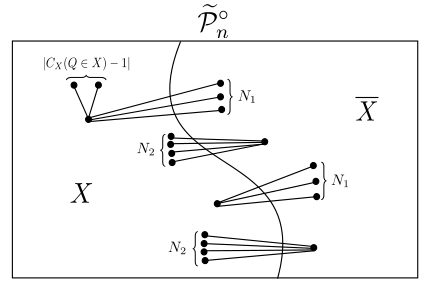
<figcaption class="paper-figure-caption"><b>Fig 1.</b> FIG. 1. Sketch of a bi-regular cut of ̃P○ n with N1 = 3, N2 = 4 and ∣CS(Q ∈S) −1∣= 2. Vertices connected by straight lines commute with each other. (Not all vertices and edges included).</figcaption>
</figure>
</div>

<p><strong>Summary.</strong> This paper rigorously analyzes the concept of maximal complementarity for observables generated by Abelian subgroups within the n-qubit Pauli group. It develops algebraic criteria to characterize when these degenerate observables are mutually complementary. The main achievement is proving that such maximal sets enforce strong, quantifiable entropic uncertainty relations on quantum states.</p>
<p><strong>Why it may be interesting.</strong> This work provides rigorous mathematical tools to quantify fundamental quantum limitations (like complementarity and uncertainty) in highly structured systems like multi-qubit Pauli measurements, which is crucial for understanding quantum error correction and measurement theory.</p>
<details>
<summary>Detailed structure</summary>
<p><strong>Main problem.</strong> The paper investigates maximal complementarity for observables associated with the n-qubit Pauli group, extending this concept from non-degenerate to degenerate (coarse-grained) observables.</p>
<p><strong>Main result.</strong> It establishes criteria for two such observables to be complementary and proves that these maximal complementary sets yield strong entropic uncertainty relations.</p>
<p><strong>Method.</strong> The analysis uses algebraic methods based on the structure of Abelian subgroups within the Pauli group, relating complementarity to commutant conditions and purity invariants.</p>
<p><strong>Model / system.</strong> The system is an n-qubit quantum system whose observables are derived from the Pauli group ($   ext{P}_n$). The focus is on Abelian subgroups ($ ilde{A},    ilde{B}$) of this group, which govern the degenerate observables studied.</p>
<p><strong>Key observables.</strong> Complementary observables $\{O_{\mathcal{A}_k}\}$, Purity Invariants ($I_\psi(S)$), and Entropic Uncertainty Bounds ($H_2$).</p>
<p><strong>Important parameters / regimes.</strong> The number of qubits ($n$), the dimension ($m$) of the Abelian subgroups, and the cardinality of maximal complementary sets ($\approx 2^n+1$).</p>
<p><strong>Assumptions / limitations.</strong> The analysis relies heavily on the known structure of the Pauli group and its Abelian subgroups, particularly when relating complementarity to incidence structures.</p>
<p><strong>Paper structure.</strong> The paper progresses by first defining strong complementarity for observables associated with Abelian subgroups. It then derives necessary and sufficient conditions (Theorem 1) for two such subgroups to be complementary. Subsequent sections relate these sets to purity invariants and finally derive the resulting entropic uncertainty relations.</p>
</details>
<details>
<summary>Abstract</summary>
<p>Observables in quantum mechanics are generally complementary, that is, they reveal mutually incompatible pieces of information about a given system. This property is not only a fundamental tenet of the quantum formalism, but also a key component in quantum cryptographic protocols. As such it has fuelled much research into finding sets of highly complementary observables. In its strongest form -- the one we consider in this work -- the information between complementary observables is not merely incompatible but mutually exclusive: maximal information about one observable implies no information about the other, and vice versa. Maximal sets of non-degenerate complementary observables are known to exist in systems of prime power dimension such as n-qubit systems. Here, we study complementarity of degenerate observables, specifically we prove that observables associated with the n-qubit Pauli group also exhibit complementarity under this restriction: first, we obtain a criterion for two such observables to be complementary and, second, we relate maximal sets of complementary observables with informational pure state complementarity equalities, further studied in two companion papers. Equivalently, these results can be formulated in terms of maximal complementary sets of (not necessarily maximal) Abelian subgroups of the Pauli group linking with (possibly coarse-grained) mutually unbiased bases. Finally, we prove that these complementarity sets entail strong entropic uncertainty relations.</p>
</details>
<p><sub><a href="#top">↑ back to top</a></sub></p>

<p><a id="paper-2607.24946"></a></p>
<h3 id="numerical-modeling-of-quasiparticle-induced-dissipation-in-fluxonium-qubits"><a href="http://arxiv.org/abs/2607.24946v1">Numerical Modeling of Quasiparticle-Induced Dissipation in Fluxonium Qubits</a></h3>
<p><strong>Authors:</strong> Kate Azar, Max Hays, Kyle Serniak<br>
<strong>Type:</strong> theory · <strong>Category:</strong> quantum information and computing · <strong>PDF:</strong> <a href="https://arxiv.org/pdf/2607.24946v1">https://arxiv.org/pdf/2607.24946v1</a><br>
<strong>Analysis basis:</strong> full PDF text, analyzed in chunks
<strong>Topic relevance:</strong> <code>methods for driven-dissipative</code> <strong>3/5</strong> · <code>QC/QI experiment</code> <strong>2/5</strong> · <code>Keldysh / 2PI / non-Gaussian methods</code> <strong>1/5</strong> · <code>correlated / nonlocal dissipation</code> <strong>1/5</strong> · <code>driven-dissipative phase transition</code> <strong>1/5</strong></p>
<div class="figure-strip-hint">↔ Scroll figures horizontally</div>
<div class="paper-figures-scroll">
<figure class="paper-figure-card">
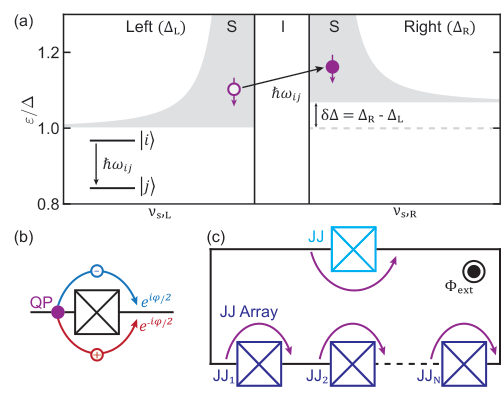
<figcaption class="paper-figure-caption"><b>Fig 1.</b> Figure 1. (a) QP density of states in energy around a JJ. A QP is depicted tunneling from the left to the right electrode, acquiring energy hωij from the qubit and inducing the qubit transition from state |i⟩to state |j⟩. Asymmetry in the su- perconducting gap across the junction electrodes (δ∆) is also represented. (b) Cartoon of a QP residing at the supercon- ducting gap tunneling across a JJ. If the QP were to tunnel from gap edge to gap edge, it would acquire phase ±φ/2 with the sign depending on whether it tunnels as an electron (blue) or a hole (red). (c) Diagram of QP tunneling across qubit cir- cuit elements. In a fluxonium circuit, a single JJ (cyan) in parallel with an array of...</figcaption>
</figure>
<figure class="paper-figure-card">
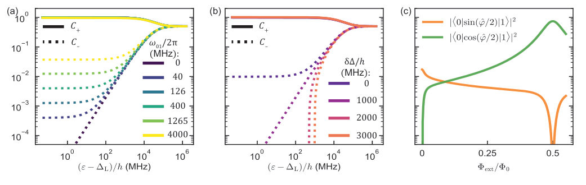
<figcaption class="paper-figure-caption"><b>Fig 2.</b> Figure 2. (a) Coherence factors versus QP energy in MHz units for different qubit transition frequencies. All curves assume a symmetric superconducting gap energy (δ∆= 0). (b) Coherence factors versus QP energy for different gap asymmetries, both in MHz units, with QP energies measured from ∆L. All curves assume a qubit transition frequency ω01/2π = 1000 MHz. (c) Squared magnitude of the fluxonium matrix elements for the small JJ QP coupling operators versus applied flux bias.</figcaption>
</figure>
<figure class="paper-figure-card">
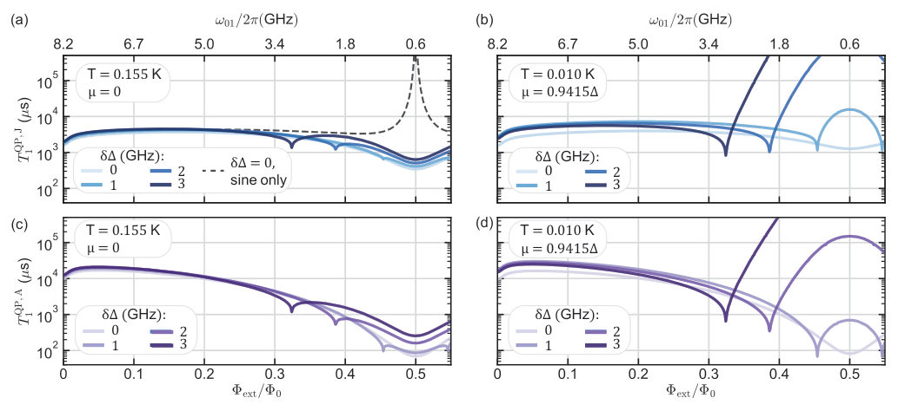
<figcaption class="paper-figure-caption"><b>Fig 3.</b> Figure 3. Calculating T1 for QP tunneling through fluxonium junctions for different QP energy distributions, versus applied bias Φext/Φ0. Colors correspond to different gap asymmetries. All curves are calculated with fluxonium Hamiltonian energies EJ/h = 10.2 GHz, EC/h = 3.6 GHz, and EL/h = 0.46 GHz. All curves assume ∆L = 50 GHz, and ∆R = ∆L + δ∆. In the top x-axis, the qubit transition frequencies at the marked flux biases are shown, rounded to the nearest 100 MHz. (a) T QP,J 1 for a “hot” QP distribution. Black dashed curve corresponds to the T1 prediction including only the sin term in Eq. 7, for δ∆= 0. (b) T QP,J 1 for a “cold” QP distribution. (c) T QP,A 1 for a “hot” QP distribution....</figcaption>
</figure>
<figure class="paper-figure-card">
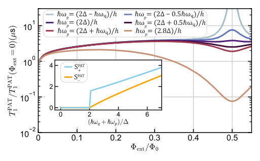
<figcaption class="paper-figure-caption"><b>Fig 4.</b> Figure 4. Trend in T1 for PAT processes at the fluxonium small JJ for different drive frequencies ωp, relative to the qubit frequency where we define ℏωq = ℏω01(Φext/Φ0 = 0.5). The T1 for each curve is plotted normalized by its value at Φext/Φ0 = 0. The inset shows the contributions of the spectral functions SPAT ± versus the total PAT process energy (ℏωp + ℏωq), normalized the to superconducting gap energy.</figcaption>
</figure>
</div>

<p><strong>Summary.</strong> This theoretical paper numerically analyzes quasiparticle-induced dissipation mechanisms in Fluxonium superconducting qubits. It challenges prior assumptions that certain operating points are immune to energy loss, demonstrating sensitivity even when considering small numerical factors. The findings guide future qubit design by highlighting the critical role of gap asymmetry and specific environmental radiation energies for achieving robust quantum coherence.</p>
<p><strong>Why it may be interesting.</strong> This work directly addresses decoherence in solid-state quantum hardware by providing quantitative insights into how material properties (like gap asymmetry) dictate the vulnerability of qubits to environmental noise sources like QPs.</p>
<details>
<summary>Detailed structure</summary>
<p><strong>Main problem.</strong> Quasiparticle (QP)-induced dissipation limits the performance of superconducting quantum processors, challenging existing theoretical assumptions about qubit protection.</p>
<p><strong>Main result.</strong> The authors show that fluxonium qubits are sensitive to QP-induced errors at bias points previously thought to be protected, and $T_1$ protection from photon-assisted tunneling only occurs for a specific radiation energy.</p>
<p><strong>Method.</strong> Numerical simulation using Fermi's golden rule to calculate energy relaxation rates ($\Gamma$) arising from both direct QP tunneling and Photon-Assisted Tunneling (PAT) processes.</p>
<p><strong>Model / system.</strong> The study focuses on Fluxonium qubits, modeled by a Hamiltonian involving Josephson Junctions. The dissipation mechanisms are analyzed via coupling terms derived from the QP tunneling Hamiltonian ($\hat{H}_t$) and PAT interaction ($\hat{H}_{	ext{PAT}}$).</p>
<p><strong>Key observables.</strong> QP-induced energy relaxation rate ($\Gamma$), coherence time ($T_1$), and spectral functions $S_{QP,J}^{\pm}$ and $S_{	ext{PAT}}^{\pm}$.</p>
<p><strong>Important parameters / regimes.</strong> Superconducting gap energies ($\Delta_L, \Delta_R$) and their asymmetry ($\delta\Delta$), external magnetic flux bias ($\Phi_{ext}$), and QP energy distributions (hot vs. cold).</p>
<p><strong>Assumptions / limitations.</strong> The analysis relies on Fermi's golden rule and makes approximations regarding the relative magnitudes of QP energies compared to the superconducting gap, though it challenges some initial assumptions.</p>
<p><strong>Figures summary.</strong> Figures illustrate QP density of states, tunneling processes (electron vs. hole), coherence factors ($C_\pm$) dependence on bias/asymmetry, and matrix elements versus applied flux bias.</p>
<p><strong>Paper structure.</strong> The paper first establishes the problem of QP dissipation in superconducting qubits. It then details the theoretical framework using Fermi's golden rule for calculating rates from both direct tunneling and PAT processes, culminating in specific predictions regarding protection mechanisms based on gap asymmetry and radiation energy.</p>
</details>
<details>
<summary>Abstract</summary>
<p>Nonequilibrium quasiparticles (QPs) generated by stray infrared and ionizing radiation can limit the performance of superconducting quantum processors and present challenges for quantum error correction schemes. Models of QP-induced energy relaxation commonly assume that the characteristic energy of the QPs and the qubit transition energy are both small relative to the superconducting gap. Under these assumptions, certain qubits such as the fluxonium would exhibit protection against QP-induced dissipation at specific bias points. Here, we show that this is not necessarily the case, numerically analyzing the predicted rate of QP-induced dissipation in fluxonium qubits for different QP energy distributions and for QPs created via photon-assisted tunneling processes. We find that accounting for small numerical factors, existing theoretical models predict sensitivity to QP-induced errors at bias points previously thought to be protected. We find that inclusion of asymmetry in the superconducting gap energy across the junction can reintroduce suppression of QP-induced relaxation, as expected. Additionally, for QPs created by photon-assisted tunneling, we predict that $T_1$ protection will only occur for a specific energy of pair-breaking radiation. This understanding of fluxonium sensitivity to QP-induced dissipation informs the development of fluxonium-based processors and future QP-mitigation strategies.</p>
</details>
<p><sub><a href="#top">↑ back to top</a></sub></p>

<p><a id="paper-2607.24963"></a></p>
<h3 id="chiral-magnons-mechanisms-and-research-progress"><a href="http://arxiv.org/abs/2607.24963v1">Chiral Magnons: Mechanisms and Research Progress</a></h3>
<p><strong>Authors:</strong> Wanxing Lin, Hanchen Deng, Bao-Tian Wang, Dao-Xin Yao<br>
<strong>Type:</strong> both · <strong>Category:</strong> strongly correlated electrons · <strong>PDF:</strong> <a href="https://arxiv.org/pdf/2607.24963v1">https://arxiv.org/pdf/2607.24963v1</a><br>
<strong>Analysis basis:</strong> full PDF text, analyzed in chunks
<strong>Topic relevance:</strong> <code>spintronics-quantum-optics interface</code> <strong>3/5</strong> · <code>correlated / nonlocal dissipation</code> <strong>1/5</strong> · <code>driven-dissipative phase transition</code> <strong>1/5</strong> · <code>exotic spin models in light-matter</code> <strong>1/5</strong> · <code>non-equilibrium dynamics</code> <strong>1/5</strong></p>
<div class="figure-strip-hint">↔ Scroll figures horizontally</div>
<div class="paper-figures-scroll">
<figure class="paper-figure-card">
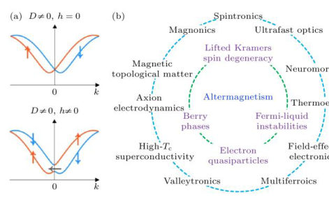
<figcaption class="paper-figure-caption"><b>Fig 1.</b> Fig. 1. Theoretical origins and symmetry mechanisms of chiral magnons: (a) Rashba-Dresselhaus analogue for magnons, reproduced with open access from Ref.[55]; (b) research landscape of altermagnetism, reproduced with open access from Ref.[13]; (c) SSG taxonomy for collinear magnets, reproduced with permission from Ref.[56].</figcaption>
</figure>
<figure class="paper-figure-card">
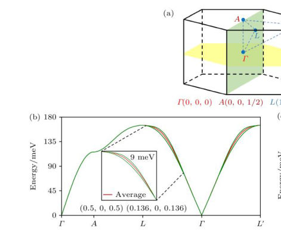
<figcaption class="paper-figure-caption"><b>Fig 2.</b> Fig. 2. Chiral magnon splitting in altermagnetic CrSb: (a) BZ and the high-symmetry paths; (b) LSWT magnon dispersion; (c) LR-TDDFT spin fluctuation dispersion (with LSWT overlay) , reproduced with permission from Ref.[17].</figcaption>
</figure>
<figure class="paper-figure-card">
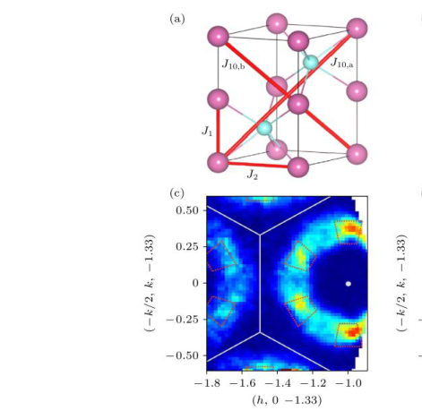
<figcaption class="paper-figure-caption"><b>Fig 3.</b> Fig. 3. Symmetric-exchange-origin chiral magnons in α-MnTe. (a) Crystal structure and key exchanges, reproduced with permission from Ref.[19]; (b) BZ and nodal planes; (c) INS constant-energy slices and (d) the corresponding LSWT calculations showing the g-wave six-fold nodes and momentum-selective non-degenerate double branches, reproduced with permission from Ref.[18].</figcaption>
</figure>
<figure class="paper-figure-card">
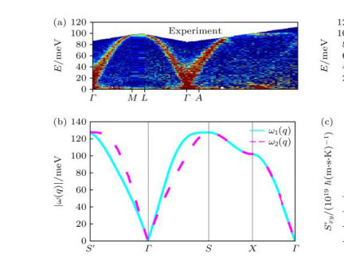
<figcaption class="paper-figure-caption"><b>Fig 4.</b> Fig. 4. Chiral magnons of bulk materials and anisotropy: (a) Experimental (the left panel) and calculated (the right panel) INS dispersions of α-Fe2O3 along high-symmetry paths, respectively, reproduced with permission from Ref.[61]; (b) in the 𝑘𝑥−𝑘y plane, RuO2 shows chiral splitting of</figcaption>
</figure>
<figure class="paper-figure-card">
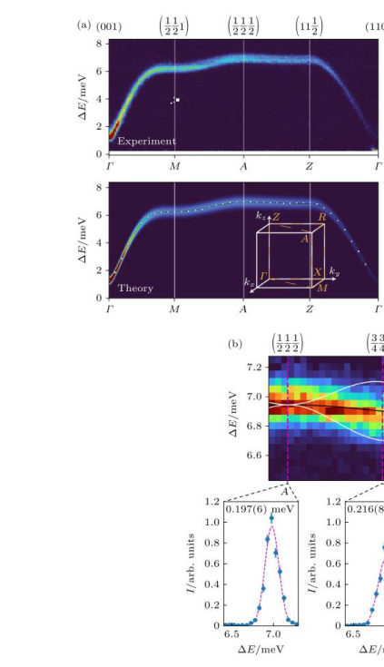
<figcaption class="paper-figure-caption"><b>Fig 5.</b> Fig. 5. INS evidence for the absence of chiral magnon splitting in MnF2. (a) (The upper panel) Experimental dispersions and (the lower panel) LSWT fitted dispersions along multiple high-symmetry paths, respectively; (b) high-resolution energy cuts on the ZA line, reproduced with open access from Ref.[21].</figcaption>
</figure>
</div>

<p><strong>Summary.</strong> This review comprehensively surveys chiral magnons, which exhibit non-reciprocal spin wave propagation due to broken momentum-inversion symmetry. It unifies the understanding of their origins—from Dzyaloshinskii-Moriya interactions to altermagnetism—and details advanced theoretical tools like non-Hermitian physics. The work guides materials science toward realizing next-generation, low-power magnonic devices.</p>
<p><strong>Why it may be interesting.</strong> The connection between symmetry breaking mechanisms (like altermagnetism) and emergent directional quantum phenomena provides a rich platform for studying topological aspects in magnetic systems, bridging condensed matter theory with spintronics engineering.</p>
<details>
<summary>Detailed structure</summary>
<p><strong>Main problem.</strong> The paper addresses chiral magnons, which are collective spin excitations characterized by a broken momentum-inversion symmetry ($\omega(\mathbf{k}) 
eq \omega(-\mathbf{k})$), leading to non-reciprocal spin-wave propagation.</p>
<p><strong>Main result.</strong> Chiral magnon physics is unified across mechanisms—including SOC-DMI and altermagnetism—providing pathways for low-dissipation, non-reciprocal devices distinct from topological magnonics.</p>
<p><strong>Method.</strong> The review synthesizes theoretical analysis using symmetry group theory, model Hamiltonians, and spin-wave theory with experimental data from INS, PNS, and transport measurements like SNE/SSE.</p>
<p><strong>Model / system.</strong> The study focuses on magnetic ordered systems (e.g., $\alpha$-MnTe, CrSb) where chirality arises either from broken spatial inversion symmetry or through altermagnetism in the weak SOC limit. The framework extends to non-Hermitian dynamics involving gain and loss.</p>
<p><strong>Key observables.</strong> Momentum-inversion asymmetry ($\omega(\mathbf{k}) 
eq \omega(-\mathbf{k})$), non-reciprocal propagation (NRP), chiral splitting ($\Delta\omega$), and lifetime asymmetry ($\Gamma(\mathbf{k}) 
eq \Gamma(-\mathbf{k})$).</p>
<p><strong>Important parameters / regimes.</strong> Room temperature stability ($T_N > 300 	ext{ K}$), energy scales (meV range), and damping parameters ($\alpha < 0.01$).</p>
<p><strong>Assumptions / limitations.</strong> The analysis relies on symmetry analysis, spin-wave theory approximations, and the assumption that chiral effects can be engineered or observed in various material classes.</p>
<p><strong>Figures summary.</strong> Figures illustrate theoretical origins (e.g., Rashba-Dresselhaus analogue for magnons) and show magnon dispersion relations exhibiting directional splitting ($    ext{Fig. 2}$), alongside diagrams detailing multiphysics couplings like magnon-photon interaction ($  ext{Fig. 9}$).</p>
<p><strong>Paper structure.</strong> The review is structured by first defining the problem (NRP via chiral magnons), then systematically covering theoretical origins (DMI vs. Altermagnetism/SSG framework), followed by detailed discussions of experimental diagnostics and advanced topics like non-Hermitian dynamics, concluding with future device applications.</p>
</details>
<details>
<summary>Abstract</summary>
<p>Chiral magnons are distinctive collective spin excitations in magnetic ordered systems, whose dispersion relations break momentum-inversion symmetry, $ω(\boldsymbol{k}) \neq ω(-\boldsymbol{k})$, resulting in essential non-reciprocal spin-wave propagation. This built-in directionality provides new opportunities for spin information transfer, thermal-spin interconversion, and low-dissipation non-reciprocal microwave devices, which complement but differ from topological magnonics. In recent years, the proposal and rapid development of altermagnetism have broadened the physical origin and research framework of chiral magnons, making them a research frontier in condensed matter physics. This review presents a unified framework for chiral magnons, covering symmetry-breaking mechanisms, material implementation, experimental characterization, transport response, and many-body non-Hermitian dynamics, and evaluates routes toward room-temperature and device-related platforms. The discussion is based on symmetry analysis, model Hamiltonians, and spin-wave theory, combined with first-principles calculations as well as recent spectroscopic (e.g., inelastic and polarized neutron scattering, Brillouin light scattering) and transport measurements. This review further summarizes bulk-gap and Berry-curvature induced chiral magnon edge states, the enhancement of non-reciprocity via chiral spin pumping and cavity-magnon hybrids, as well as non-Hermitian features arising from multiparticle damping and gain-loss competition. This review provides a comprehensive reference for elucidating the underlying mechanisms of chiral magnons, advancing the synthesis and experimental characterization of novel materials, and also guiding the design of next-generation non-reciprocal magnonic devices.</p>
</details>
<p><sub><a href="#top">↑ back to top</a></sub></p>

<p><a id="paper-2607.25699"></a></p>
<h3 id="counterfactual-quantum-sensing-what-interaction-free-measurement-can-and-cannot-buy"><a href="http://arxiv.org/abs/2607.25699v1">Counterfactual Quantum Sensing: What Interaction-Free Measurement Can and Cannot Buy</a></h3>
<p><strong>Authors:</strong> Christoph F. Wildfeuer<br>
<strong>Type:</strong> theory · <strong>Category:</strong> other · <strong>PDF:</strong> <a href="https://arxiv.org/pdf/2607.25699v1">https://arxiv.org/pdf/2607.25699v1</a><br>
<strong>Analysis basis:</strong> full PDF text, analyzed in chunks
<strong>Topic relevance:</strong> <code>quantum measurements</code> <strong>3/5</strong> · <code>interference shaping light</code> <strong>2/5</strong> · <code>entanglement &amp; information structure</code> <strong>1/5</strong> · <code>measurement-induced transitions</code> <strong>1/5</strong></p>
<div class="figure-strip-hint">↔ Scroll figures horizontally</div>
<div class="paper-figures-scroll">
<figure class="paper-figure-card">
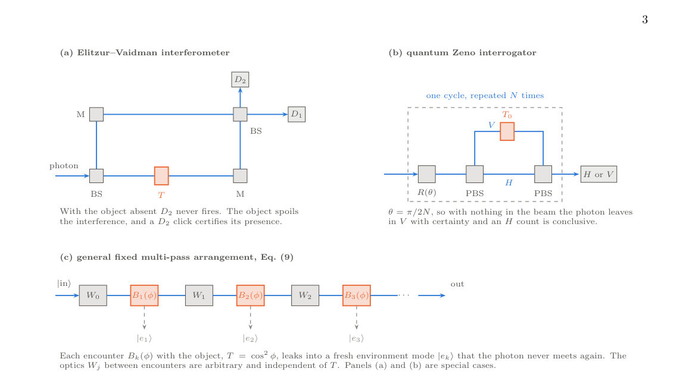
<figcaption class="paper-figure-caption"><b>Fig 1.</b> FIG. 1. The three arrangements considered. (a) is the interferometer of Sec. II, (b) the Zeno interrogator of Secs. III and IV, and (c) the general class covered by the bound of Sec. V, of which the first two are special cases.</figcaption>
</figure>
<figure class="paper-figure-card">
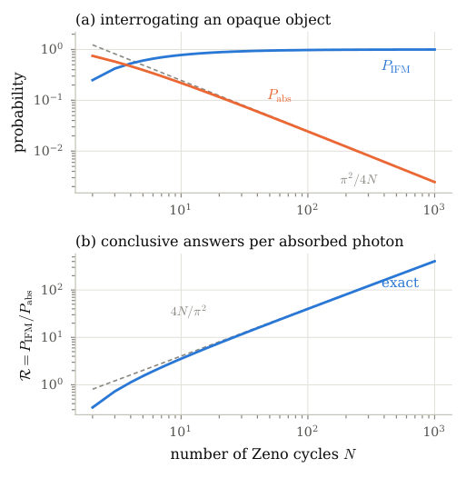
<figcaption class="paper-figure-caption"><b>Fig 2.</b> FIG. 3. Quantum Zeno interrogation of an opaque object. (a) The probability PIFM of a conclusive interaction-free answer, Eq. (9), and the probability Pabs that the object absorbs the photon; the dashed line is the asymptote π2/4N. (b) Their ratio R, the number of conclusive interrogations per absorbed photon, approaching 4N/π2 (dashed) from below by the con- stant 1 2 of Eq. (10). The growth is unbounded in a lossless chain.</figcaption>
</figure>
<figure class="paper-figure-card">
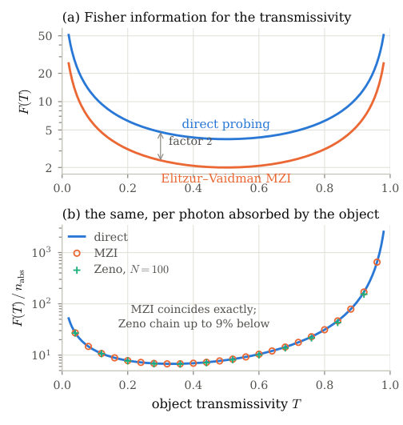
<figcaption class="paper-figure-caption"><b>Fig 3.</b> FIG. 2. The central negative result. (a) Fisher information about the transmissivity T of an object placed in one arm of the interferometer, Eq. (4), against direct transmission prob- ing, Eq. (5). The interferometer sits a factor of two below the direct scheme at every T. (b) The same quantities nor- malised by the number of photons the object absorbs. The Elitzur–Vaidman interferometer (circles) falls exactly on the direct-probing curve [T(1−T)2]−1 (solid). The 100-cycle Zeno chain (crosses) lies between 1 and 9% below it. That short- fall is real and not a defect of the measurement: the classical Fisher information plotted here equals the quantum Fisher information of the reduced photon...</figcaption>
</figure>
<figure class="paper-figure-card">
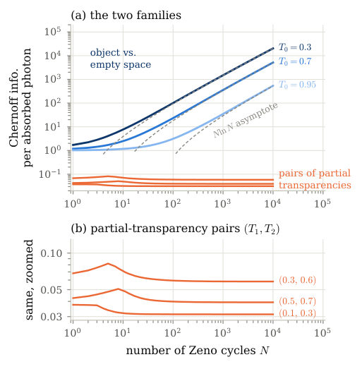
<figcaption class="paper-figure-caption"><b>Fig 4.</b> FIG. 4. What the discrimination advantage requires. Cher- noff information for an N-cycle chain, normalised by the pho- tons the object absorbs under whichever of the two hypotheses absorbs more. (a) Blue: an object of transmissivity T0 inter- rogated against empty space; dashed lines are the closed-form asymptote of Eq. (13), which the exact curves join once N exceeds a few tens. The rate grows as N ln N for every T0 shown, none of which is close to opaque. Orange: two partial transparencies interrogated against each other; the rate does not grow. The case T0 = 0 is omitted from the blue fam- ily because the two outcome distributions then have disjoint support, a single interrogation...</figcaption>
</figure>
<figure class="paper-figure-card">
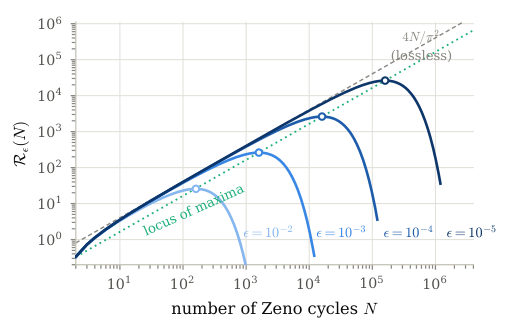
<figcaption class="paper-figure-caption"><b>Fig 5.</b> FIG. 5. The loss-limited optimum. Conclusive interrogations per absorbed photon, Rϵ(N) of Eq. (16), for four values of the parasitic per-cycle loss ϵ. Open circles mark the maxima, located on the integer grid; the dotted line is their locus, reached at Nopt = x⋆/ϵ, and the dashed line is the lossless asymptote 4N/π2. Cycling past Nopt is actively harmful: the chain leaks the photon before it can answer.</figcaption>
</figure>
</div>

<p><strong>Summary.</strong> This work rigorously analyzes the limits of Interaction-Free Measurement (IFM) by comparing its performance to direct probing using estimation theory. It finds that while IFM offers no advantage when estimating a continuous parameter like transparency, it provides a significant, quantifiable advantage when determining if an object is present at all. The key takeaway is that the benefit lies in discrimination against null hypotheses, not in precise measurement of loss.</p>
<p><strong>Why it may be interesting.</strong> It provides rigorous theoretical boundaries on how much information can be extracted from non-destructive measurements, which is crucial for designing next-generation quantum sensors in optics and fundamental physics.</p>
<details>
<summary>Detailed structure</summary>
<p><strong>Main problem.</strong> The paper quantifies the advantage of Interaction-Free Measurement (IFM) compared to direct probing for quantum sensing tasks, specifically distinguishing between parameter estimation and hypothesis testing.</p>
<p><strong>Main result.</strong> For estimating transparency ($T$), IFM offers no advantage over direct probing; however, a significant advantage exists when discriminating between an object's presence versus its complete absence.</p>
<p><strong>Method.</strong> The analysis uses estimation-theoretic tools like Fisher information (for parameter estimation) and Chernoff information (for hypothesis testing), comparing results for multi-pass interferometers against single-pass probes.</p>
<p><strong>Model / system.</strong> The primary system is the Elitzur-Vaidman interferometer or general fixed multi-pass arrangements where a single photon interacts sequentially with an absorbing object characterized by transmissivity $T$.</p>
<p><strong>Key observables.</strong> Fisher Information ($F$), Chernoff information ($C$), and the ratio of quantum Fisher information ($\mathcal{F}_Q$) to purified state information ($\mathcal{F}_{	ext{pur}}^Q$).</p>
<p><strong>Important parameters / regimes.</strong> Transmissivity $T$, number of Zeno cycles ($N$), and parasitic loss per cycle ($\epsilon$).</p>
<p><strong>Assumptions / limitations.</strong> The analysis assumes the object is memoryless, non-dispersive, and that the comparison holds for fixed multi-pass arrangements (though an advantage exists for null detection).</p>
<p><strong>Figures summary.</strong> Figures compare Fisher information ratios between MZI/Zeno chains vs. direct probing; one figure contrasts asymptotic growth rates for conclusive interaction-free answers versus continuous parameter estimation.</p>
<p><strong>Paper structure.</strong> The paper systematically compares the quantum advantage of IFM across different tasks: first showing no gain for estimating $T$, then demonstrating a superior, growing advantage ($N \ln N$) when testing against object absence, and finally establishing general bounds on this advantage.</p>
</details>
<details>
<summary>Abstract</summary>
<p>Interaction-free measurement infers the presence of an absorbing object from a photon that, in the counterfactual sense, never interacted with it, and is widely described as a route to minimally invasive sensing. We ask what it actually buys, in estimation-theoretic terms. Written as a channel-estimation problem, the Elitzur-Vaidman interferometer carries exactly half the Fisher information about the object's transmissivity that direct transmission probing does, and the two schemes deliver identical Fisher information per absorbed photon. For measuring how transparent something is, the interferometer buys nothing. The advantage lies in discrimination, and we show that what it requires is not that the object be opaque but that the competing hypothesis be the object's absence. Against empty space the Chernoff information per absorbed photon grows almost linearly, as the number of Zeno cycles times its logarithm, even for a weakly absorbing object; between two partial transparencies it does not grow at all. Parasitic loss in the cycle caps the advantage. The number of conclusive interrogations per absorbed photon reaches a maximum inversely proportional to the loss per cycle, at an optimal cycle number that is likewise inversely proportional to it, which identifies the loss per cycle as the figure of merit governing how far interaction-free sensing can be pushed. Finally, the negative result is not special to the interferometer. For a single photon meeting a memoryless, non-dispersive object any number of times through arbitrary fixed optics, the accessible quantum Fisher information never exceeds that of the same incident flux spent on independent single-pass probes, and is generically far below it. This recovers the bound of Massar, Mitchison and Pironio for this class, by a short argument that also identifies when it is tight.</p>
</details>
<p><sub><a href="#top">↑ back to top</a></sub></p>

<p><a id="paper-2607.25462"></a></p>
<h3 id="covariance-geometry-of-basis-resolved-low-energy-wavefunctions-in-the-spin-math667math-kitaev-heisenberg-model"><a href="http://arxiv.org/abs/2607.25462v1">Covariance Geometry of Basis-Resolved Low-Energy Wavefunctions in the Spin-$1/2$ Kitaev--Heisenberg Model</a></h3>
<p><strong>Authors:</strong> Sk Saniur Rahaman, S. R. Hassan<br>
<strong>Type:</strong> theory · <strong>Category:</strong> strongly correlated electrons · <strong>PDF:</strong> <a href="https://arxiv.org/pdf/2607.25462v1">https://arxiv.org/pdf/2607.25462v1</a><br>
<strong>Analysis basis:</strong> full PDF text, analyzed in chunks
<strong>Topic relevance:</strong> <code>entanglement &amp; information structure</code> <strong>3/5</strong> · <code>analog quantum simulation</code> <strong>2/5</strong> · <code>exotic spin models in light-matter</code> <strong>1/5</strong> · <code>non-equilibrium dynamics</code> <strong>1/5</strong></p>
<div class="figure-strip-hint">↔ Scroll figures horizontally</div>
<div class="paper-figures-scroll">
<figure class="paper-figure-card">
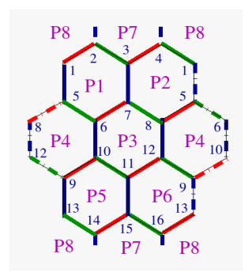
<figcaption class="paper-figure-caption"><b>Fig 1.</b> FIG. 1. (color online) Geometry of the periodic N = 16 hon- eycomb cluster employed in the present work. The red, green, and blue bonds denote the three inequivalent bond-dependent next nearest neighbour Kitaev interactions Sx i Sx j ,Sy i Sy j , and Sz i Sz j ,respectively. The elementary plaquettes,P1, . . . , P8, are labeled for constructing the plaquette-flux operators used in the covariance analysis.</figcaption>
</figure>
<figure class="paper-figure-card">
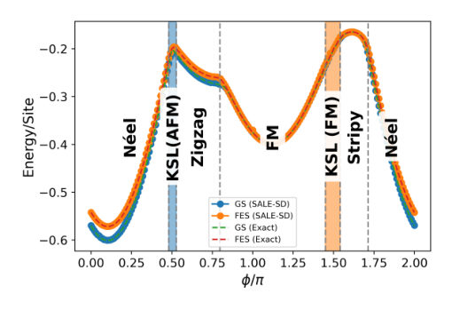
<figcaption class="paper-figure-caption"><b>Fig 2.</b> FIG. 2. Ground-state and first-excited-state energies per site for the N = 16 Kitaev–Heisenberg model obtained using the SALE–SD method (solid lines) and exact diagonaliza- tion (dashed lines) as functions of the interaction parame- ter ϕ. The excellent agreement demonstrates that the re- duced symmetry-adapted basis accurately reproduces the low- energy spectrum throughout the phase diagram.</figcaption>
</figure>
<figure class="paper-figure-card">
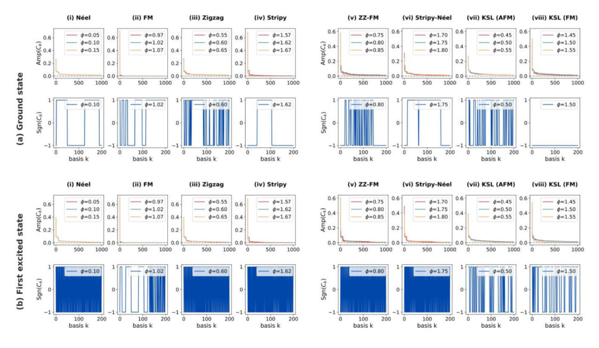
<figcaption class="paper-figure-caption"><b>Fig 3.</b> FIG. 3. Expansion coefficients of the ground state (GS) and first excited state (FES) for representative interaction parameters across the Kitaev–Heisenberg phase diagram. For each state, the upper panel shows the coefficient magnitudes |Ck| arranged in decreasing order, while the lower panel displays the signs of the first 200 coefficients. Only these leading signs are displayed clearly, since the signs of all 1000 retained coefficients become visually unresolved when plotted together. The covariance analysis nevertheless uses all M = 1000 retained basis configurations.</figcaption>
</figure>
<figure class="paper-figure-card">
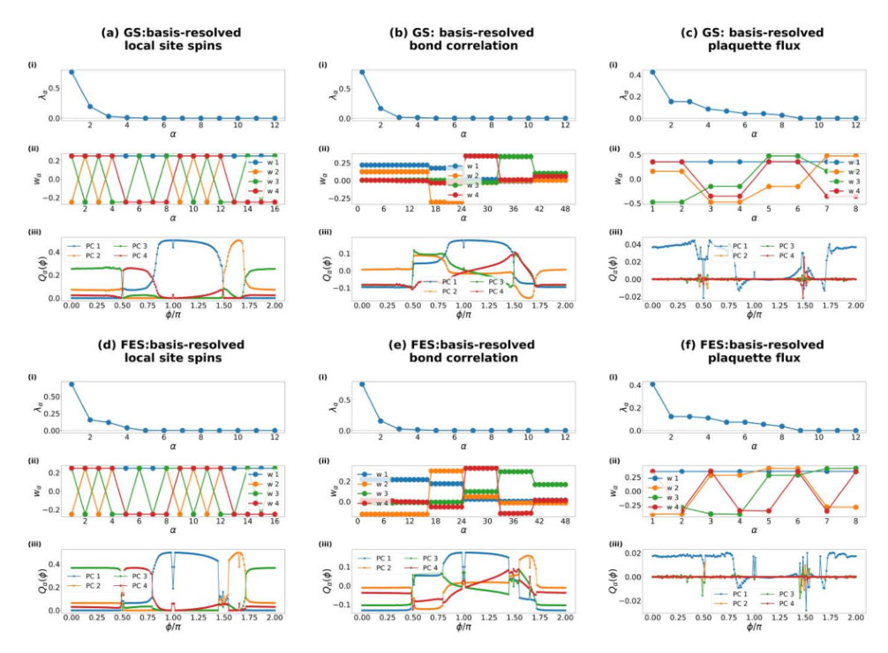
<figcaption class="paper-figure-caption"><b>Fig 4.</b> FIG. 4. Principal component analysis of the basis-resolved covariance matrices for the local-spin, spin-pair, and plaquette-flux representations. Panels (a)–(c) correspond to the ground state, while panels (d)–(f) show the corresponding results for the first excited state. For each observable, row (i) presents the normalized covariance eigenvalues λα, row (ii) the corresponding covariance eigenvectors wα, and row (iii) the quantified principal components Qα(ϕ) defined in Eq. (16).</figcaption>
</figure>
<figure class="paper-figure-card">
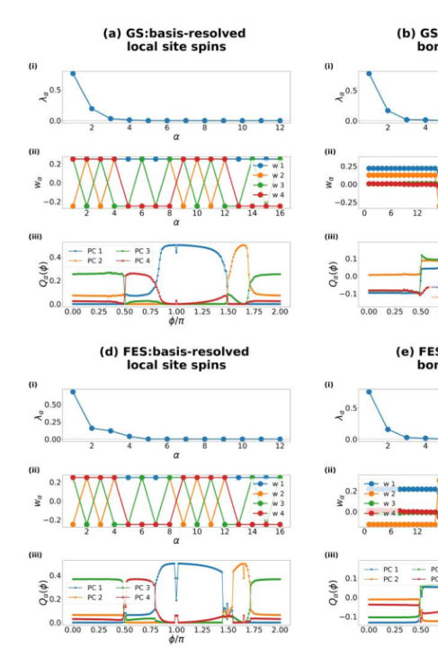
<figcaption class="paper-figure-caption"><b>Fig 5.</b> Fig.3 therefore establishes two microscopic ingredients that enter the later covariance analysis: the distribu- tion of amplitude among the dominant computational- basis configurations and the relative-sign organization of those configurations. The evolution of these ingredients across ordered phases, magnetic phase boundaries, and Kitaev regimes provides the microscopic foundation for the changes in covariance geometry discussed below.</figcaption>
</figure>
</div>

<p><strong>Summary.</strong> This work introduces a novel basis-resolved covariance framework to statistically characterize low-energy wavefunctions in the Kitaev–Heisenberg model. By analyzing how local spin, bond correlations, and plaquette fluxes co-vary across the phase diagram using PCA, the authors map out the quantum state's statistical geometry. This reveals that the complexity of the wavefunction structure changes fundamentally when moving into exotic Kitaev spin liquid regimes.</p>
<p><strong>Why it may be interesting.</strong> While focused on magnetism, the use of advanced statistical tools like covariance geometry provides a generalizable method for characterizing complex quantum states beyond simple symmetry breaking, which is relevant across many-body physics.</p>
<details>
<summary>Detailed structure</summary>
<p><strong>Main problem.</strong> The study aims to characterize the organization of low-energy many-body wavefunctions in strongly correlated quantum systems, particularly where conventional order parameters fail.</p>
<p><strong>Main result.</strong> The covariance geometry varies significantly across the phase diagram: ordered phases are 1D, Kitaev regimes show intrinsic multidimensionality, and this geometry depends on the physical observable used for probing.</p>
<p><strong>Method.</strong> A basis-resolved covariance framework is developed using Principal Component Analysis (PCA) applied to feature vectors derived from local-spin, bond-correlation, and plaquette-flux operators.</p>
<p><strong>Model / system.</strong> The system studied is the spin-$1/2$ Kitaev–Heisenberg model on a honeycomb lattice. The Hamiltonian interpolates between Heisenberg and Kitaev limits via coupling parameters J and K.</p>
<p><strong>Key observables.</strong> Covariance geometry (quantified by Shannon entropy and Participation Ratio), principal covariance modes, local-spin expectation values, bond correlations, and plaquette fluxes.</p>
<p><strong>Important parameters / regimes.</strong> The interaction parameter $\phi$, which tunes the system across various quantum phases including magnetically ordered states and Kitaev spin liquid regimes.</p>
<p><strong>Assumptions / limitations.</strong> The analysis assumes that constructing feature vectors from specific physical operators (local-spin, bond, flux) provides a statistically meaningful representation of the wavefunction's structure for PCA.</p>
<p><strong>Figures summary.</strong> Figures illustrate the honeycomb lattice structure and show covariance spectra/principal components across different phases; Tables summarize Shannon entropy and Participation Ratio values for various representations.</p>
<p><strong>Paper structure.</strong> The paper establishes the framework by defining basis-resolved feature spaces using multiple physical operators, calculates the ensemble covariance matrix over the phase diagram, and analyzes its statistical geometry using PCA, entropy, and participation ratio to map out phase transitions statistically.</p>
</details>
<details>
<summary>Abstract</summary>
<p>We develop a basis-resolved covariance framework for investigating the organization of low-energy many-body wavefunctions in the spin-$1/2$ Kitaev--Heisenberg model. By constructing covariance matrices from local-spin, bond-correlation, and plaquette-flux representations of the low-energy states, Principal Component Analysis (PCA) is employed to identify the dominant collective covariance modes. We find a systematic evolution of the covariance geometry across the phase diagram: magnetically ordered phases are described by an essentially one-dimensional covariance manifold, conventional magnetic phase boundaries exhibit competition between leading covariance modes, whereas the Kitaev regimes develop intrinsically multidimensional covariance geometry. Furthermore, the same many-body wavefunction produces distinct covariance geometries in different operator representations, demonstrating that covariance geometry is determined jointly by the quantum state and the physical observables used to probe it. Shannon entropy and the participation ratio provide quantitative measures of this evolution. The present framework establishes basis-resolved covariance geometry as a complementary statistical perspective for characterizing frustrated quantum many-body systems beyond conventional order parameters.</p>
</details>
<p><sub><a href="#top">↑ back to top</a></sub></p>

<p><a id="paper-2607.25395"></a></p>
<h3 id="quantum-teleportation-toward-the-quantum-internet-a-concise-review"><a href="http://arxiv.org/abs/2607.25395v1">Quantum Teleportation toward the Quantum Internet: A Concise Review</a></h3>
<p><strong>Authors:</strong> Yang-Bin Ma, Yun-Ru Fan, Ri-Yao Song, Ya-Zhou Zhao, Yi-Ye Liu, Si Shen, Zi-Hao Zhan, Yan-Yu Wei, Kai Guo, Guang-Can Guo, Qiang Zhou<br>
<strong>Type:</strong> both · <strong>Category:</strong> quantum information and computing · <strong>PDF:</strong> <a href="https://arxiv.org/pdf/2607.25395v1">https://arxiv.org/pdf/2607.25395v1</a><br>
<strong>Analysis basis:</strong> full PDF text, analyzed in chunks
<strong>Topic relevance:</strong> <code>quantum optics experiment</code> <strong>3/5</strong> · <code>QC/QI experiment</code> <strong>2/5</strong> · <code>entanglement &amp; information structure</code> <strong>1/5</strong> · <code>quantum measurements</code> <strong>1/5</strong></p>
<div class="figure-strip-hint">↔ Scroll figures horizontally</div>
<div class="paper-figures-scroll">
<figure class="paper-figure-card">

<figcaption class="paper-figure-caption"><b>Fig 1.</b> Figure 1. Scheme of (a) quantum teleportation of qubit and (b) teleportation of entangled</figcaption>
</figure>
<figure class="paper-figure-card">

<figcaption class="paper-figure-caption"><b>Fig 2.</b> Figure 1(a) shows the scheme of teleportation protocol: suppose particle 1, which is to be</figcaption>
</figure>
<figure class="paper-figure-card">

<figcaption class="paper-figure-caption"><b>Fig 3.</b> Figure 2. Six basic network architectures for quantum teleportation. By distributing the four</figcaption>
</figure>
<figure class="paper-figure-card">

<figcaption class="paper-figure-caption"><b>Fig 4.</b> Figure 3. Quantum repeater architecture and the elementary link with quantum memories.</figcaption>
</figure>
<figure class="paper-figure-card">

<figcaption class="paper-figure-caption"><b>Fig 5.</b> Figure 4. (a) Hertz-rate three-node quantum teleportation system over a 64 km optical fibre</figcaption>
</figure>
</div>

<p><strong>Summary.</strong> This review details how quantum teleportation is crucial for building a global quantum internet by enabling long-distance transfer of quantum states using entanglement. It analyzes the necessary components, such as entanglement swapping and quantum repeaters, required to overcome physical limitations like photon loss in optical fibers. The work surveys current experimental progress across diverse hardware platforms toward scalable quantum networking.</p>
<p><strong>Why it may be interesting.</strong> It provides a comprehensive overview of the physical implementations required for scaling quantum information protocols, touching upon hardware integration across different domains like photonics, solid-state qubits, and atomic systems.</p>
<details>
<summary>Detailed structure</summary>
<p><strong>Main problem.</strong> The primary challenge is realizing a global-scale quantum internet, which requires robust methods for distributing quantum resources over long distances.</p>
<p><strong>Main result.</strong> Quantum teleportation, enabled by entanglement swapping and quantum repeaters, provides the essential mechanism for state transfer necessary to build such a network across various physical platforms.</p>
<p><strong>Method.</strong> The review synthesizes protocols involving quantum teleportation (using Bell State Measurements) and quantum repeater chains to overcome photon loss over long-haul links.</p>
<p><strong>Model / system.</strong> The discussion covers multiple architectures, including single-link vs. multi-link setups, utilizing platforms ranging from optical fibers and atomic memories to satellite/balloon relays for global connectivity.</p>
<p><strong>Key observables.</strong> Teleportation fidelity, entanglement distribution range, and transmission loss scaling are key performance indicators.</p>
<p><strong>Important parameters / regimes.</strong> The achievable distance is fundamentally limited by photon loss; quantum repeaters aim to change this from exponential to polynomial scaling.</p>
<p><strong>Assumptions / limitations.</strong> It assumes the feasibility of high-fidelity entanglement generation and measurement across diverse physical media (e.g., light $\leftrightarrow$ matter).</p>
<p><strong>Figures summary.</strong> Figures illustrate the basic schemes for quantum teleportation, entanglement swapping, and six fundamental network architectures required for building quantum communication links.</p>
<p><strong>Paper structure.</strong> The paper progresses from defining quantum teleportation as essential to discussing entanglement swapping, then detailing various experimental architectures (six types), and finally focusing on quantum repeaters and future scalability challenges.</p>
</details>
<details>
<summary>Abstract</summary>
<p>Quantum networks play a pivotal role in quantum information science, which not only provide a secure communication platform for remote access to quantum computers but also serve as the strategic core for achieving large-scale quantum information processing, forming the foundational infrastructure for the future global-scale quantum internet. Quantum teleportation, which enables the transmission of unknown quantum states over long distances by employing quantum entanglement together with classical communication, is essential for the distribution of quantum resources in the construction of the global-scale quantum internet. To realize a global-scale quantum internet, quantum repeater protocols represent one of the most promising approaches for enabling quantum communication between any nodes. This concise review presents representative experimental demonstrations of quantum teleportation for constructing quantum networks across different physical platforms. Along this trajectory, the review discusses current challenges, open issues, and future perspectives toward scalable and practical quantum internet.</p>
</details>
<p><sub><a href="#top">↑ back to top</a></sub></p>

<p><a id="paper-2607.24905"></a></p>
<h3 id="stripe-tuned-superconductivity-in-single-flavor-metals-with-nontrivial-quantum-geometry"><a href="http://arxiv.org/abs/2607.24905v1">Stripe-tuned superconductivity in single-flavor metals with nontrivial quantum geometry</a></h3>
<p><strong>Authors:</strong> Yi-Ting Tu, Yang-Zhi Chou, Yi Huang, Sankar Das Sarma<br>
<strong>Type:</strong> theory · <strong>Category:</strong> strongly correlated electrons · <strong>PDF:</strong> <a href="https://arxiv.org/pdf/2607.24905v1">https://arxiv.org/pdf/2607.24905v1</a><br>
<strong>Analysis basis:</strong> full PDF text, analyzed in chunks
<strong>Topic relevance:</strong> <code>analog quantum simulation</code> <strong>3/5</strong> · <code>Frenkel-Kontorova</code> <strong>2/5</strong> · <code>Keldysh / 2PI / non-Gaussian methods</code> <strong>1/5</strong> · <code>driven-dissipative phase transition</code> <strong>1/5</strong></p>
<div class="figure-strip-hint">↔ Scroll figures horizontally</div>
<div class="paper-figures-scroll">
<figure class="paper-figure-card">

<figcaption class="paper-figure-caption"><b>Fig 1.</b> FIG. 1. Summery of results. (a) Setup: We consider a 2D single- flavor electron systems with a finite Berry cuarvature, an attractive interaction, and a stripe potential. (b) The real-space top view of the system and two different types of effective pairings. Each stripe forms a 1D subsystem along the y direction. The intra-stripe pairing (marked by the yellow wiggly line) is caused by the qy dependence of the effective interaction Vq; the inter-stripe pairing (marked by the teal wiggly line) is caused by the qx dependence of the effective interaction Vq. (c) Asymptotic phase diagram in the weakly interacting and strong stripe limit. The yellow and teal regions correspond to px and py-wave...</figcaption>
</figure>
<figure class="paper-figure-card">

<figcaption class="paper-figure-caption"><b>Fig 2.</b> FIG. 2. The structure of the lowest subband. Gray countours indicates m(E −E0)/g2 = 0.02, 0.04, . . ., and red countours indicates the one passing the VHS.</figcaption>
</figure>
</div>

<p><strong>Summary.</strong> This paper theoretically explores how stripe potentials interact with nontrivial quantum geometry to dictate the superconducting pairing symmetry in 2D metals. By solving the gap equation, the authors predict a competition between $p_x$-wave (nodal) and $p_y$-wave (fully gapped) superconductivity. The results offer a pathway to control exotic superconducting states using engineered lattice potentials.</p>
<p><strong>Why it may be interesting.</strong> This work provides a concrete theoretical framework for engineering superconducting pairing symmetry using engineered periodic potentials (stripes) in systems with intrinsic geometric properties (Berry curvature). This concept of 'controlling' superconductivity via geometry is highly relevant to topological materials and advanced quantum devices.</p>
<details>
<summary>Detailed structure</summary>
<p><strong>Main problem.</strong> The study investigates how the combination of nontrivial quantum geometry (Berry curvature) and an applied periodic stripe potential influences the superconducting pairing symmetry in a 2D single-flavor metal.</p>
<p><strong>Main result.</strong> Two distinct pairing states, longitudinal $p_y$-wave and exotic transverse $p_x$-wave, can be stabilized, with their competition controlled by electron density and Berry curvature effects. The $p_x$ state exhibits a nodal line at $k_x=0$, while the $p_y$ state is fully gapped.</p>
<p><strong>Method.</strong> The analysis involves solving the linearized gap equation (LGE) in the quasi-one-dimensional limit, deriving effective interactions via projection onto the lowest subband, and comparing eigenvalues for different pairing symmetries.</p>
<p><strong>Model / system.</strong> The model is a 2D single-flavor electron system subjected to both a constant Berry curvature ($B>0$) and a real-space stripe potential $U(x, y) = -2U_0 \cos gx$. The physics is analyzed in the quasi-1D limit by restricting calculations to the Fermi surface.</p>
<p><strong>Key observables.</strong> Pairing symmetry ($    heta$), superconducting critical temperature ($T_c$), and gap structure (nodal lines vs. full gaps).</p>
<p><strong>Important parameters / regimes.</strong> Stripe strength parameters ($A g^2, B g^2$) and the ratio of Fermi momentum to stripe period ($k_F/g$).</p>
<p><strong>Assumptions / limitations.</strong> The analysis relies on the weak coupling limit (small $T_c$), the strong-stripe approximation (projecting onto the lowest subband), and initially assumes real symmetry for pairing channels.</p>
<p><strong>Figures summary.</strong> Figures illustrate phase diagrams showing the preferred pairing form ($    heta$) in parameter space $(A g^2, B g^2, k_F /g)$ and show $T_c$ dependence on interaction strength for different pairing symmetries.</p>
<p><strong>Paper structure.</strong> The paper progresses by defining the physical model (Hamiltonian with stripe potential), deriving an effective low-energy interaction ($V_q$), solving the linearized gap equation in the quasi-1D limit to find candidate pairing channels ($\lambda_{p_x}, \lambda_{p_y}$), and finally mapping out the phase diagram controlling the transition between these symmetries.</p>
</details>
<details>
<summary>Abstract</summary>
<p>We study how the interplay between nontrivial quantum geometry and an applied stripe potential affects superconductivity in a two-dimensional single-flavor metal. Assuming a weak contact attractive interaction and focusing on the lowest subband in the presence of a strong stripe potential, we analytically derive two possible pairing states in the quasi-one-dimensional limit. In addition to the conventional longitudinal $p_y$-wave order (with the stripes along the $y$ direction), we find that an exotic transverse $p_x$-wave order can be stabilized. The competition between these two orders is controlled by the electron density of each stripe and the Berry-curvature-dressed interaction. Notably, the transverse $p_x$ wave order develops a nodal line at $k_x=0$, while the longitudinal $p_y$ order is fully gapped. We discuss the possible experimental probes distinguishing these orders. Our results establish a way of controlling the pairing symmetry through a stripe potential, predicting superconductivity with nontrivial quantum geometry.</p>
</details>
<p><sub><a href="#top">↑ back to top</a></sub></p>

<p><a id="paper-2607.25909"></a></p>
<h3 id="charge-6e-superconductivity-from-doping-su3-spin-liquids"><a href="http://arxiv.org/abs/2607.25909v1">Charge-6e superconductivity from doping SU(3) spin liquids</a></h3>
<p><strong>Authors:</strong> Yan-Qi Wang, Boran Zhou, Hui Yang, Zhi-Qiang Gao<br>
<strong>Type:</strong> theory · <strong>Category:</strong> strongly correlated electrons · <strong>PDF:</strong> <a href="https://arxiv.org/pdf/2607.25909v1">https://arxiv.org/pdf/2607.25909v1</a><br>
<strong>Analysis basis:</strong> full PDF text, analyzed in chunks
<strong>Topic relevance:</strong> <code>exotic spin models in light-matter</code> <strong>3/5</strong> · <code>analog quantum simulation</code> <strong>2/5</strong> · <code>Keldysh / 2PI / non-Gaussian methods</code> <strong>1/5</strong></p>
<div class="figure-strip-hint">↔ Scroll figures horizontally</div>
<div class="paper-figures-scroll">
<figure class="paper-figure-card">

<figcaption class="paper-figure-caption"><b>Fig 1.</b> FIG. 1. Mean-field phase diagram of Eq. (B1) in the (φ, K3) plane at temperatures T/J = 0–5 [panels (a)–(f)]. Colors label the lowest energy ansatz: trimer (black), Φ = 0 (green), |Φ△| = π/3 CSL with C = ±1 (blue), |Φ△| = 2π/3 CSL with C = ±2 (orange), and Φ = π (red). White markers in (a) denote the φ = 0 boundaries K3/J = 0.417 and 5.955 of Ref. [52]. Calculations use a 24 × 24 unit-cell lattice.</figcaption>
</figure>
</div>

<p><strong>Summary.</strong> This theoretical paper explores how doping SU(3) symmetric quantum spin liquids can realize exotic charge-6e superconductivity. Using advanced techniques like parton constructions on a Hubbard model, the authors demonstrate that symmetry breaking and fractionalization cooperate to stabilize these higher-charge superconducting states. It offers a powerful conceptual link between topological order in frustrated magnets and unconventional pairing mechanisms.</p>
<p><strong>Why it may be interesting.</strong> This work provides a highly detailed, theoretically rigorous framework connecting higher-rank symmetries (SU(3)) and fractionalization mechanisms to predict unconventional superconductivity, which is crucial for understanding high-temperature superconductors.</p>
<details>
<summary>Detailed structure</summary>
<p><strong>Main problem.</strong> The paper proposes doping SU(3)-symmetric spin liquids as a novel theoretical route to achieve exotic charge-6e superconductivity, generalizing previous work on charge-4e SC.</p>
<p><strong>Main result.</strong> Doping mechanisms in SU(3) quantum spin liquids can lead to various superconducting states, including chiral and non-Abelian charge-6e superconductors by pairing fractionalized fermionic trions.</p>
<p><strong>Method.</strong> The study employs complementary parton constructions, mean-field ansatz calculations, and analysis of topological field theories (like Chern-Simons terms) applied to doped Hubbard models.</p>
<p><strong>Model / system.</strong> The primary model is a bilayer triangular-lattice Hubbard model possessing SU(3) spin symmetry. The theory analyzes the low-energy physics resulting from doping this system across different quantum spin liquid phases ($\mathbb{Z}_3$, Abelian/non-Abelian CSLs).</p>
<p><strong>Key observables.</strong> Superconducting charge quantization (e.g., 6e), Hall conductance ($\sigma_H$), chiral central charge ($c_-$), and the nature of topological order.</p>
<p><strong>Important parameters / regimes.</strong> Doping concentration ($x$), interlayer exchange coupling ($J_\perp^T$), and various symmetry-breaking parameters defining the spin liquid type (e.g., $ ext{SU}(3)_1,   ext{SU}(3)_2$).</p>
<p><strong>Assumptions / limitations.</strong> The analysis relies heavily on parton constructions and mean-field approximations to map out complex ground states and superconducting order parameters.</p>
<p><strong>Figures summary.</strong> Figure 1 (from Chunk 4 notes) illustrates the phase diagram of an effective SU(3) spin model, showing transitions between trimer, U(1) spin liquid, and various chiral spin liquid phases as a function of temperature and coupling ratios ($K_3/J$).</p>
<p><strong>Paper structure.</strong> The paper progresses by first defining the physical model (Hubbard Hamiltonian with SU(3) symmetry), then using parton constructions to analyze doping effects in specific quantum spin liquids ($\mathbb{Z}_3$, CSLs), culminating in the identification of charge-6e superconducting phases.</p>
</details>
<details>
<summary>Abstract</summary>
<p>We propose doping $SU(3)$-symmetric spin liquids as a route toward charge-$6e$ superconductivity. This generalizes the idea of constructing charge-$4e$ superconductivity from doped $SU(4)$-symmetric phases. As a concrete platform, we study a bilayer triangular-lattice Hubbard model with $SU(3)$ spin symmetry and interlayer antiferromagnetic exchange. Using complementary parton constructions, we analyze doped $\mathbb{Z}_3$ quantum spin liquid and $SU(3)$-related chiral spin liquids. Doping a $\mathbb{Z}_3$ quantum spin liquid can produce an orthogonal metal with a gauge invariant fermi surface of charge-$3e$ fermionic trions. Pairing these trions gives a time-reversal-symmetric charge-$6e$ superconductor. Doping Abelian $SU(3)_1$ and $SU(6)_1$ chiral spin liquids yields chiral charge-$6e$ superconductors with and without residual Abelian topological order, respectively. Doping a non-Abelian $SU(3)_2$ chiral spin liquid leads to a non-Abelian chiral charge-$6e$ superconductor intertwined with $SO(3)_{-3}$ topological order and supporting non-Abelian $h/(6e)$ superconducting vortices. We also identify several other phases, including $\mathbb{Z}_3$ orthogonal metal, quantum anomalous Hall (crystal) phases enriched by $\mathbb{Z}_3$ or $\mathbb{Z}_2$ topological order, $SU(3)$-breaking charge-$2e$ superconductors, composite fermi liquid coupled to non-Abelian gauge field, and descendant chiral spin liquids. Our results identify doped $SU(3)$ spin liquids as a natural setting where symmetry, fractionalization, and topology cooperate to produce charge-$6e$ superconductivity.</p>
</details>
<p><sub><a href="#top">↑ back to top</a></sub></p>

<p><a id="paper-2607.24924"></a></p>
<h3 id="efficient-computation-of-real-time-correlators-using-pauli-propagation"><a href="http://arxiv.org/abs/2607.24924v1">Efficient computation of real-time correlators using Pauli Propagation</a></h3>
<p><strong>Authors:</strong> Alexander F. Kemper, Raghav G. Jha, Arnab Bachhar, Goksu C. Toga, Mariano Guerrero Perez, Nicholas J. Mayhall<br>
<strong>Type:</strong> theory · <strong>Category:</strong> numerical methods · <strong>PDF:</strong> <a href="https://arxiv.org/pdf/2607.24924v1">https://arxiv.org/pdf/2607.24924v1</a><br>
<strong>Analysis basis:</strong> full PDF text, analyzed in chunks
<strong>Topic relevance:</strong> <code>methods for driven-dissipative</code> <strong>3/5</strong> · <code>Keldysh / 2PI / non-Gaussian methods</code> <strong>1/5</strong> · <code>analog quantum simulation</code> <strong>1/5</strong> · <code>non-equilibrium dynamics</code> <strong>1/5</strong></p>
<div class="figure-strip-hint">↔ Scroll figures horizontally</div>
<div class="paper-figures-scroll">
<figure class="paper-figure-card">

<figcaption class="paper-figure-caption"><b>Fig 1.</b> FIG. 1. Overview of the computational strategy developed in this paper. 1) Real-time operator dynamics, truncated on coefficient and weight to control the growth of Pauli strings. 2) Clifford-augmented MPS supplies an accurate, low-bond- dimension approximation of the ground state to measure against. 3) A low-rank positive semi-definite (PSD) fit super-resolves short-time data out to late times, avoiding Pauli explosion. 4) By combining these techniques, we can obtain the dynamical spin structure factor S(k, ω)</figcaption>
</figure>
<figure class="paper-figure-card">

<figcaption class="paper-figure-caption"><b>Fig 2.</b> FIG. 2. On-site correlation function S(r = 0, t) for the N = 8 1D ferromagnetic Heisenberg chain. Pauli propagation (PP) results are shown in lines, and the exact results with red mark- ers.</figcaption>
</figure>
<figure class="paper-figure-card">

<figcaption class="paper-figure-caption"><b>Fig 3.</b> FIG. 3. Pauli propagation convergence overview for the 1D ferromagnetic Heisenberg chain at N = 64. The top row is the exact (analytic) 1-magnon reference; the remaining rows are four representative composite-truncation points (ε, w). Left column: On-site correlation function S(r = 0, t), real (solid) and imaginary (dotted) parts, with ED in black and PP over- laid in red/orange. Insets show Re S(r = j, t) as a function of time (horizontal) and site j from the source (at r = 0). Right column: dynamical structure factor |S(k, ω)|2 with exponen- tial time-domain damping e−t/τ using τ = 1. The cyan curve marks the analytic 1-magnon dispersion ω(k) = 4(1 −cos k). Each momentum is individually...</figcaption>
</figure>
<figure class="paper-figure-card">

<figcaption class="paper-figure-caption"><b>Fig 4.</b> FIG. 4. Pauli propagation results for the 1D Heisenberg anti- ferromagnet. a) Time traces for selected momenta using Pauli propagation (PP) and TDVP. b,c) |S(k, ω)|2 obtained (b) from TDVP with τ = 5/3 and (c) from Pauli propagation with τ = 0.25. The red and orange dashed lines indicate the known boundaries of the spectrum of spinons in 1D.</figcaption>
</figure>
<figure class="paper-figure-card">

<figcaption class="paper-figure-caption"><b>Fig 5.</b> FIG. 5. Positive semi-definite extension in momentum space from N = 64 ferromagnetic Heisenberg in 1D for short-time Pauli Propagation (PP) data (ε = 10−5, w = 20, 21 sam- ples). a) Re S(k, t) showing 16 momenta, comparing exact (ED) with the rank 1 extension from PP data (blue mark- ers). Vertical lines indicate the rank 1 frequency found (ω0) as well as the exact analytic result at each momentum k. b) Resulting power spectrum of S(k, ω) with exponential damp- ing using τ = 2.5 and zero-padding. c) Maximal operator support (number of Pauli terms) during the propagation. d) Full S(k, ω) heatmap from the PSD-extended signal.</figcaption>
</figure>
</div>

<p><strong>Summary.</strong> The paper introduces a novel, efficient method to calculate real-time correlation functions in interacting quantum spin systems by combining Pauli Propagation with low-rank time extension. This overcomes the severe limitation of operator basis explosion inherent to direct simulation methods. The technique allows for reliable probing of complex dynamics and spectral features in 1D and 2D quantum magnets.</p>
<p><strong>Why it may be interesting.</strong> This work presents an advanced computational toolkit that tackles the fundamental bottleneck of real-time quantum simulation—the exponential growth of operators—by merging established methods (PP) with modern data analysis techniques (low-rank extrapolation).</p>
<details>
<summary>Detailed structure</summary>
<p><strong>Main problem.</strong> The primary goal is the efficient computation of real-time two-point time-ordered correlators, which are essential for linking microscopic quantum theory to measurable macroscopic observables.</p>
<p><strong>Main result.</strong> By combining short-time Pauli propagation with low-rank extension methods based on positivity conditions, the authors extend correlation function calculations far beyond the direct computational time window while maintaining spectral accuracy.</p>
<p><strong>Method.</strong> The core method involves using Pauli Propagation (PP) to evolve operators in the Heisenberg picture, which is then augmented by time extension techniques that exploit the low-rank nature of the dynamics to overcome the exponential growth of Pauli strings. Ground states are approximated using Clifford-Augmented Matrix Product States (CAMPS).</p>
<p><strong>Model / system.</strong> The study focuses on one- and two-dimensional quantum spin systems, specifically utilizing the Heisenberg model Hamiltonian ($H = J \sum \mathbf{X}_i \cdot \mathbf{X}_{i+1}$). Analyses cover both ferromagnetic and anti-ferromagnetic regimes.</p>
<p><strong>Key observables.</strong> Time-dependent correlation functions $C(t)$, dynamical structure factor $S(\mathbf{k}, \omega)$, and the static staggered moment $m_s$.</p>
<p><strong>Important parameters / regimes.</strong> Pauli string truncation parameters ($\epsilon$, $w$), MPS bond dimensions ($D$), and system size ($N$).</p>
<p><strong>Assumptions / limitations.</strong> The method assumes that the correlation functions exhibit a low-rank structure, allowing extrapolation from short-time data; it also relies on truncating the Pauli operator basis.</p>
<p><strong>Figures summary.</strong> Figures illustrate the computational strategy combining PP with CAMPS and low-rank fitting. They show finite-size scaling of excitation spectra ($\omega(\mathbf{k})$) for 2D AFM systems, demonstrating convergence to theoretical limits.</p>
<p><strong>Paper structure.</strong> The paper develops a combined numerical framework: first establishing ground state approximations via CAMPS, then using Pauli Propagation for short-time dynamics, and finally applying low-rank fitting/extension techniques to extrapolate results to longer times and higher resolutions.</p>
</details>
<details>
<summary>Abstract</summary>
<p>Pauli propagation has shown promise for classically simulating quantum dynamics by evolving observables directly in the Heisenberg picture. In this work, we investigate its use for computing real-time two-point time-ordered correlators in one- and two-dimensional quantum systems. One major limitation of Pauli propagation is the rapid growth in the number of Pauli strings beyond short times. We overcome this limitation by combining accurate short-time Pauli-propagation data with time extension methods based on a positivity condition and the observation that the dynamics are often dominated by a small number of characteristic frequencies. This combined approach extends correlation functions far beyond the directly accessible time window while avoiding the exponential proliferation of Pauli operators. We demonstrate that the resulting correlators retain the relevant dynamical and spectral information. Our results broaden the regime in which classical methods can reliably probe the real-time dynamics of interacting quantum many-body systems.</p>
</details>
<p><sub><a href="#top">↑ back to top</a></sub></p>

<p><a id="paper-2607.25908"></a></p>
<h3 id="variational-approach-to-yukawa-fluids-i-thermodynamics"><a href="http://arxiv.org/abs/2607.25908v1">Variational approach to Yukawa fluids. I. Thermodynamics</a></h3>
<p><strong>Authors:</strong> S. A. Khrapak, A. G. Khrapak<br>
<strong>Type:</strong> theory · <strong>Category:</strong> statistical mechanics · <strong>PDF:</strong> <a href="https://arxiv.org/pdf/2607.25908v1">https://arxiv.org/pdf/2607.25908v1</a><br>
<strong>Analysis basis:</strong> full PDF text, analyzed in chunks
<strong>Topic relevance:</strong> <code>Keldysh / 2PI / non-Gaussian methods</code> <strong>3/5</strong> · <code>analog quantum simulation</code> <strong>1/5</strong> · <code>driven-dissipative phase transition</code> <strong>1/5</strong> · <code>methods for driven-dissipative</code> <strong>1/5</strong></p>
<div class="figure-strip-hint">↔ Scroll figures horizontally</div>
<div class="paper-figures-scroll">
<figure class="paper-figure-card">

<figcaption class="paper-figure-caption"><b>Fig 1.</b> FIG. 1. (Color online) Thermal component of the excess en- ergy of a strongly coupled Yukawa fluid for five screening pa- rameters κ = 1, 2, 3, 4, and 5. Thermal energy is calculated from Eq. (14) and is plotted as a function of the reduced cou- pling parameter Γ/Γm, where Γm is the coupling parameter at melting. The symbols correspond to MD numerical data from Ref. [39]. Different solid curves correspond to variational calculation performed in this work. The dashed black curve marks the original RT scaling uth ≃3.1(Γ/Γm)2/5.</figcaption>
</figure>
<figure class="paper-figure-card">

<figcaption class="paper-figure-caption"><b>Fig 2.</b> FIG. 2. (Color online) Relative deviation between excess en- ergies calculated from the variational approach and MD sim- ulation results from Refs. [36, 39]. Relative deviation denoted as (Var −MD)/MD is plotted as a function of reduced cou- pling parameter Γ/Γm, where Γm is the coupling parameter at melting. The data are shown foe three screening parame- ters, κ = 1, 3, and 5. The shaded region corresponds to the strongly-coupled fluid-like regime at Γ/Γm ≳0.05.</figcaption>
</figure>
<figure class="paper-figure-card">

<figcaption class="paper-figure-caption"><b>Fig 3.</b> FIG. 3. (Color online) Negative excess entropy of a strongly coupled Yukawa fluid (−sex) versus the reduced coupling pa- rameter Γ/Γm, as obtained from the variational calculation for five screening parameters κ = 1, 2, 3, 4, and 5. The color scheme is the same as used in Fig. 1. The dashed black curve marks the quasi-universal scaling sex ≃−4(Γ/Γm)1/2</figcaption>
</figure>
<figure class="paper-figure-card">

<figcaption class="paper-figure-caption"><b>Fig 4.</b> FIG. 4. (Color online) Same as in Fig. 3, except the excess entropy of the Yukawa fluid is now calculated from a modified Eq. (16).</figcaption>
</figure>
<figure class="paper-figure-card">

<figcaption class="paper-figure-caption"><b>Fig 5.</b> FIG. 5. (Color online) The accuracy of different methods to estimate the compressibility factor of the Yukawa fluid. Plot- ted are the values of (Zx −ZMF)/ZMF, where Z is compress- ibility factor, as a function of the reduced coupling parameter Γ/Γm. Here MF corresponds to the MC data from Meijer and Frenkel [35], and x = DRY, RT, SMSA, and Var approxima- tions, as discussed in the text.</figcaption>
</figure>
</div>

<p><strong>Summary.</strong> This work applies a variational approach to determine the thermodynamics of Yukawa fluids, which model plasmas and colloidal suspensions. By using hard-sphere fluid properties as a reference, the authors accurately calculate excess energy, entropy, and pressure even in strongly coupled regimes. The method is particularly useful for predicting phase boundaries, such as the melting curve, where experimental or simulation data are lacking.</p>
<p><strong>Why it may be interesting.</strong> While focused on classical plasma physics, the use of advanced statistical mechanical techniques (variational bounds) to predict phase transitions in strongly coupled systems is relevant for understanding quantum many-body ground states and critical phenomena.</p>
<details>
<summary>Detailed structure</summary>
<p><strong>Main problem.</strong> The primary goal is calculating the excess energy, entropy, and pressure of a strongly coupled Yukawa fluid.</p>
<p><strong>Main result.</strong> The variational approach provides accurate estimates for these thermodynamic properties, successfully extending predictions into regimes where numerical data are scarce or unavailable.</p>
<p><strong>Method.</strong> A variational approach based on the Bogoliubov inequality is employed, using the hard-sphere fluid as a reference system to bound and estimate the excess free energy.</p>
<p><strong>Model / system.</strong> The physical system is a Yukawa fluid, characterized by screened Coulomb repulsive interactions $\phi(r) = \Gamma/r \exp(-\kappa r/a)$. This model is relevant for dusty plasmas and colloidal suspensions.</p>
<p><strong>Key observables.</strong> Excess free energy ($f_{ex}$), excess entropy ($s_{ex}$), excess pressure ($p_{ex}$), and the melting curve location ($\Gamma_m(\kappa)$).</p>
<p><strong>Important parameters / regimes.</strong> Coupling parameter ($\Gamma$), screening parameter ($\kappa$), and the variational parameter ($\eta$). The strong coupling regime is a key focus.</p>
<p><strong>Assumptions / limitations.</strong> The method relies on approximations for the radial distribution function (e.g., Percus-Yevick theory) and assumes that the effective packing fraction at freezing approaches the hard-sphere limit as screening increases.</p>
<p><strong>Figures summary.</strong> Figures compare calculated thermal energy, compressibility factor ($Z$), and effective packing fraction ($\eta_{fr}$) against Molecular Dynamics simulations and theoretical scaling laws, showing convergence towards known asymptotes.</p>
<p><strong>Paper structure.</strong> The paper develops the variational formalism for excess thermodynamic quantities, applies it to calculate specific observables like $u_{th}$ and $s_{ex}$, and then uses these results to extrapolate the melting curve into highly screened regimes ($\kappa$ large).</p>
</details>
<details>
<summary>Abstract</summary>
<p>The excess energy, entropy, and pressure of a strongly coupled Yukawa fluid are calculated from the variational approach using the fluid of hard spheres as a reference system. As in the case of the one-component plasma, the Percus-Yevick virial entropy is appropriate for such calculations and delivers remarkable agreement with available results from molecular dynamics simulations. The agreement with the molecular-dynamics results is particularly impressive in the strongly coupled regime, making this approach a useful predictive tool when numerical data are scarce or not yet available. As an application of the variational approach, we estimate the location of the melting curve in the regime of sufficiently strong screening.</p>
</details>
<p><sub><a href="#top">↑ back to top</a></sub></p>

<p><a id="paper-2607.25702"></a></p>
<h3 id="benchmarking-optical-receivers-for-quantum-communication-and-randomness-certification"><a href="http://arxiv.org/abs/2607.25702v1">Benchmarking Optical Receivers for Quantum Communication and Randomness Certification</a></h3>
<p><strong>Authors:</strong> Hamid Tebyanian<br>
<strong>Type:</strong> theory · <strong>Category:</strong> quantum information and computing · <strong>PDF:</strong> <a href="https://arxiv.org/pdf/2607.25702v1">https://arxiv.org/pdf/2607.25702v1</a><br>
<strong>Analysis basis:</strong> full PDF text, analyzed in chunks
<strong>Topic relevance:</strong> <code>quantum measurements</code> <strong>3/5</strong> · <code>entanglement &amp; information structure</code> <strong>1/5</strong> · <code>measurement-induced transitions</code> <strong>1/5</strong></p>
<div class="figure-strip-hint">↔ Scroll figures horizontally</div>
<div class="paper-figures-scroll">
<figure class="paper-figure-card">

<figcaption class="paper-figure-caption"><b>Fig 1.</b> Figure 1. General schematic of the protocol. A laser feeds the preparation stage, where the energy of the emitted state is bounded and monitored; the state is measured by an un- characterised device, and the raw outcomes are fed to post- processing, where the certified min-entropy determines the extractable randomness.</figcaption>
</figure>
<figure class="paper-figure-card">

<figcaption class="paper-figure-caption"><b>Fig 2.</b> Figure 2. Detection schemes, labelled as in the panels. HD: homodyne, one quadrature by interference with a local oscil- lator. HT: heterodyne, both quadratures at the cost of an added vacuum unit. PNR: photon counting with multiplexed on–off elements. Hyb 1: beacon homodyne, conditional dis- placement, photon counting. Hyb 2 (Kennedy): nulling dis- placement and a single-photon detector.</figcaption>
</figure>
<figure class="paper-figure-card">

<figcaption class="paper-figure-caption"><b>Fig 3.</b> Figure 3. Conditional laws P(b|x) for ternary PSK at µ = 0.2, ideal detectors–the exact matrices used as SDP input. PNR (multiplexed, Nbin = 20, click bins {0}, {1}, {2, 3}, {4–7}, {≥ 8}) is phase blind: its columns are identical, so Hmin = 0 by Proposition 1. Homodyne (P quadrature, midpoint bins), heterodyne (angular sectors) and Hybrid-1 (parameters of Sec. II E 5, beacon label traced out) produce input-dependent columns.</figcaption>
</figure>
<figure class="paper-figure-card">

<figcaption class="paper-figure-caption"><b>Fig 4.</b> Figure 4. Hybrid-1 receiver. (a) General operating principle. A beacon homodyne measurement provides a coarse phase estimate, which determines the conditional displacement applied to the transmitted mode before photon-number-resolving detection. The panel gives a schematic phase partition rather than the precise ternary implementation. (b) Ternary implemen- tation. Two thresholds, T2 &lt; T1, divide the beacon outcome into three regions associated with D(2gα), the identity operation and D(gα). The displaced amplitudes produce the branch- and input-dependent mean photon numbers λk,x of Eq. (37), which determine the corresponding PNR click distributions.</figcaption>
</figure>
<figure class="paper-figure-card">

<figcaption class="paper-figure-caption"><b>Fig 5.</b> Figure 5(a) shows the certified entropy against µ in the coherent model. Homodyne rises from 0.35 bits at µ = 0.005 to its peak H⋆ min = 0.43 bits at µ⋆≈0.054 and falls back to 0.09 bits at µ = 1, where the constel- lation becomes too distinguishable to constrain the ad- versary; certification does not die at low energy because the bin edges scale with √µ, so the states approach each other exactly as fast as the data flatten. Heterodyne runs parallel and slightly below, while the Kennedy cas- cade and the coarse-grained Hybrid-1 remain substan- tially below the Gaussian receivers. The joint-output Hybrid-1 changes the low-energy picture: at µ = 0.01</figcaption>
</figure>
</div>

<p><strong>Summary.</strong> This paper rigorously benchmarks optical receivers—comparing continuous-variable, photon-counting, and hybrid detectors—to determine their impact on certified randomness extraction. Using SDPs, the authors show that receiver choice critically affects security bounds, demonstrating that hybrid schemes offer advantages at low energy while CV methods excel at moderate energy.</p>
<p><strong>Why it may be interesting.</strong> It provides rigorous, information-theoretic bounds on achievable randomness in practical quantum communication settings by focusing on the measurement apparatus's limitations, which is crucial for designing robust quantum hardware.</p>
<details>
<summary>Detailed structure</summary>
<p><strong>Main problem.</strong> The paper benchmarks how different optical receivers (CV, photon-counting, hybrid) affect the security analysis of quantum protocols, particularly for randomness certification.</p>
<p><strong>Main result.</strong> Hybrid receivers perform optimally at low energy when retaining beacon labels, while continuous-variable receivers yield the highest certified entropy at moderate energies compared to other methods.</p>
<p><strong>Method.</strong> The authors use observed receiver statistics $P(b|x)$ within a prepare-and-measure framework to derive an exact bound on the min-entropy $H_{\min}(B|X, \Lambda)$ using Semidefinite Programming (SDP).</p>
<p><strong>Model / system.</strong> The system involves quantum states prepared by a source characterized by its Gram matrix and measured by uncharacterized optical receivers. The analysis is framed within semi-device-independent security proofs.</p>
<p><strong>Key observables.</strong> $H_{\min}(B|X, \Lambda)$ (certified min-entropy), $P(b|x)$ (observed conditional probabilities), and the adversary's guessing probability ($P_{	ext{guess}}$).</p>
<p><strong>Important parameters / regimes.</strong> Mean photon number bound ($\mu$), energy constraint ($    ext{Tr}[\hat{
ho}_x \hat{n}] \le \mu$), and phase drift ($   heta$).</p>
<p><strong>Assumptions / limitations.</strong> The security analysis assumes the side information $\Lambda$ is classical, and the source model is fixed by its Gram matrix or constrained by an energy bound.</p>
<p><strong>Figures summary.</strong> Figure 1 schematically shows the prepare-and-measure protocol with energy bounding. Figure 14 compares distinguishability indices for different receivers over varying mean photon number ($\mu$) and phase drift ($ heta$).</p>
<p><strong>Paper structure.</strong> The paper establishes the general framework using SDPs to bound min-entropy, analyzes specific receiver types (photon counting vs. CV/hybrid), derives quantitative results comparing their performance across energy regimes, and discusses implications for various quantum protocols.</p>
</details>
<details>
<summary>Abstract</summary>
<p>The choice of optical receiver determines which properties of the transmitted states remain visible in the observed data and therefore affects the performance of different quantum protocols. We compare continuous-variable, photon-counting and hybrid receivers within the same prepare-and-measure framework, using semi-device-independent randomness generation as the main case study. The measurement device is left uncharacterised, while the source is described by the Gram matrix of its pure signal states using an energy-derived overlap constraint, a magnitude-Gram benchmark or the full complex Gram matrix of a certified coherent phase-shift-keyed constellation. Within this framework, the observed receiver statistics are used to bound $H_{\min}(B|X,Λ)$ against classical side information correlated with the measurement device but independent of the input. For a fixed Gram matrix, this bound is obtained from an exact semidefinite program, with complex multi-input cases treated in block-real form and checked through the corresponding dual certificate. Photon counting alone is phase blind for fixed-modulus phase encoding and therefore certifies no worst-case randomness. Continuous-variable receivers give the highest certified entropy at moderate energy, while under the nominal source calibration a hybrid receiver performs better at low energy when the beacon-region label is retained in the output. The same receiver statistics also provide receiver-level comparisons for discrete-modulated continuous-variable quantum key distribution, quantum reading, covert communication and quantum-signature verification, without replacing the full security analysis required for each protocol.</p>
</details>
<p><sub><a href="#top">↑ back to top</a></sub></p>

<p><a id="paper-2607.24987"></a></p>
<h3 id="an-algebraically-closed-family-of-informational-n-qubit-purity-invariants"><a href="http://arxiv.org/abs/2607.24987v1">An algebraically closed family of informational n-qubit purity invariants</a></h3>
<p><strong>Authors:</strong> Markus Frembs, Giovanni Natale, Christopher S. P. Wever, Philipp A. Hoehn<br>
<strong>Type:</strong> theory · <strong>Category:</strong> quantum information and computing · <strong>PDF:</strong> <a href="https://arxiv.org/pdf/2607.24987v1">https://arxiv.org/pdf/2607.24987v1</a><br>
<strong>Analysis basis:</strong> full PDF text, analyzed in chunks
<strong>Topic relevance:</strong> <code>entanglement &amp; information structure</code> <strong>3/5</strong></p>
<div class="figure-strip-hint">↔ Scroll figures horizontally</div>
<div class="paper-figures-scroll">
<figure class="paper-figure-card">

<figcaption class="paper-figure-caption"><b>Fig 1.</b> FIG. 1. Venn diagram showing the set structure of the rele- vant group elements defining the sets in Def. 1.</figcaption>
</figure>
</div>

<p><strong>Summary.</strong> This paper develops a generalized theory for finding purity invariants characterizing $n$-qubit pure states, extending concepts from two qubits. It achieves this by defining specific sets within the Pauli group based on maximal complementarity structures rather than just anti-commuting operators. The result provides a systematic classification and enumeration of these fundamental quantum state constraints.</p>
<p><strong>Why it may be interesting.</strong> This work provides deep structural insights into the geometry of high-dimensional quantum state spaces by identifying conserved quantities (invariants) that are fundamentally linked to the underlying symmetry group structure ($  ext{PSU}(2^n)$).</p>
<details>
<summary>Detailed structure</summary>
<p><strong>Main problem.</strong> The authors aim to find a general family of state-independent invariants for $n$-qubit pure states that successfully generalizes the known 'pentagon identities' from the two-qubit case.</p>
<p><strong>Main result.</strong> They introduce a new family of quadratic invariants derived from maximal complementarity structures within the Pauli group, proving these sets constitute purity invariants for arbitrary $n$. The number of such distinct invariants is systematically counted.</p>
<p><strong>Method.</strong> The analysis employs advanced algebraic techniques involving the structure of Pauli expectation values and identifying specific structured subsets ($J$) of the Pauli group based on commuting/anti-commuting generators.</p>
<p><strong>Model / system.</strong> The system under study consists of $n$-qubit quantum states, whose geometry is characterized by the pure state manifold $   ext{CP}^{2^n-1}$. The diagnostics are built upon the Pauli group $  ilde{\mathbb{P}}_n$ and the Brukner-Zeilinger information measure.</p>
<p><strong>Key observables.</strong> The primary observable is the purity invariant $I_\psi(S)$, which must remain constant for all pure states $\psi$. Other key elements include the expectation values of Pauli operators ($\alpha_P$).</p>
<p><strong>Important parameters / regimes.</strong> The number of qubits, $n$, is the main parameter governing complexity; results are explicitly derived and compared for $n=2$ and $n>2$.</p>
<p><strong>Assumptions / limitations.</strong> The derivation relies on specific algebraic closure relations concerning sets defined by maximal Abelian subgroups within the Pauli group structure.</p>
<p><strong>Figures summary.</strong> Figure 1 illustrates a Venn diagram detailing the set structure defining the invariant set $J$; later sections contain large tables explicitly listing the 28 distinct Pauli string sets for the $n=3$ case.</p>
<p><strong>Paper structure.</strong> The paper progresses by first establishing the need for generalization beyond simple anti-commutation rules (failure at $n>2$). It then defines the invariant set $J$ based on complementarity structures, proves its invariance property using algebraic tools, and finally enumerates and catalogs these invariants for small systems like $n=3$.</p>
</details>
<details>
<summary>Abstract</summary>
<p>We present a family of quadratics in Pauli expectation values, and prove that they constitute state-independent invariants for all n-qubit pure states. This family generalises the two-qubit `pentagon identities', discovered in the reconstruction programme of [P. A. Höhn, Quantum 1, 38 (2017), P. A. Höhn and C. S. P. Wever, Phys. Rev. A 95, 012102 (2017)], where they characterise the space of pure states, as well as the unitary group, and are interpreted as complementarity equalities in the Brukner-Zeilinger information measure. The generalisation to arbitrarily many qubits is nontrivial as it requires new tools which in turn reveal novel structural properties that are absent in the two-qubit case. A thorough analysis of these properties, and their relation with mutual unbiasedness and complementarity in the n-qubit Pauli group, can be found in two companion papers.</p>
</details>
<p><sub><a href="#top">↑ back to top</a></sub></p>
<hr>
<p>
<a href="index.html">← Index</a>
 · <a href="papers_03.html">← Previous</a> · <a href="papers_05.html">Next →</a>
</p>
<hr>

</body>
</html>
